Theory of Computing
Matthew Barnes, Mathias Ritter
Books 4
Automata theory: Regular languages 5
Deterministic Finite Automata 5
Alphabets and strings 5
Languages 6
Deterministic finite automata (DFAs) 6
Product construction 9
Regular languages 10
Nondeterminism, subset construction and ϵ-moves 15
Nondeterminism 15
Subset construction 18
ϵ-moves 21
Regular expressions and Kleene’s theorem 23
Defining regular expressions 23
Atomic patterns 23
Compound patterns 24
Examples 24
Kleene’s theorem 24
Reg exp to εNFA 25
εNFA to reg exp 26
Limitations of regular languages 29
Pumping (🎃) Lemma for regular languages -
contrapositive form 30
Automata theory: Context free languages 34
Pushdown Automata (PDA) 34
Transition relation 34
Configuration 35
Acceptance 35
By final state 36
By empty stack 36
Example PDA accepting palindromes 36
Context free grammars 38
Chomsky Normal Form 41
Greibach Normal Form 42
Removing epsilon and unit productions 42
Removing left-recursive productions 42
Converting between CFG, CNF and GNF 44
Converting a CFG to GNF 44
Converting a CFG to GNF 46
PDA and CFG conversions 49
CFG to PDA 49
PDA to CFG 51
Proving closure 58
Union 58
Concatenation 58
Kleene star 59
Intersection with regular languages 59
Limits of context-free languages 60
Pumping (🎃) Lemma for context-free languages -
contrapositive form 63
Computability theory 67
Turing machines 67
Decidability 68
Recursive and R.E languages 68
Proof: Recursive Sets Closed under Complement 68
(Semi) Decidable properties 70
Universal Turing machines 71
Multiple tapes 71
Simulating Turing machines 71
Encoding Turing machines 71
Constructing a UTM 72
Halting problem 72
Proof by contradiction 72
Proof by diagonalisation 73
Decidable / Undecidable problems 74
Reductions 77
Properties of reductions 82
Rice’s theorem 83
Complexity theory 85
Big-O and Big-ϴ 86
Big-ϴ 86
Big-O 86
The class P 87
Feasible and infeasible problems 87
Decision problems 87
Definition 88
The PATH problem 89
The HAMPATH problem 90
Regular and context-free languages 90
The class NP 91
Non-deterministic Turing machine 91
Time complexity of Turing machines 92
Definition 95
The SAT problem 95
The HAMPATH problem 96
The TSP(D) problem 97
The 3COL problem 97
NP = P? 97
Presburger arithmetic 98
NP-Completeness 99
Polynomial time reduction 99
3COL to SAT 100
NP-hard 101
The Cook-Levin theorem 101
What is NP-completeness 101
Space complexity 101
Space complexity 101
PSPACE 103
NPSPACE 103
Savitch’s Theorem 104
EXPTIME 104
Relationships between complexity classes 104
PSPACE-hard 104
PSPACE-completeness 105
TL;DR 105
Automata theory: Regular languages 105
Automata theory: Context free languages 106
Computability theory 107
Complexity theory 108
Books
-
There are two main books for this module. I’ve added
PDF links to both of them.
Automata theory: Regular languages
-
Automata relates to machines with finite memory.
-
Unlike maths, where we can have infinite of something, we
cannot have infinite of something in an automata because
it’ll run out of memory.
-
Automata also relates to pattern matching, modelling,
verification of hardware etc.
Deterministic Finite Automata
Alphabets and strings
-
An alphabet is a finite set of elements. It is denoted with capital sigma,
Σ.
- Examples:
-
Σ = {0, 1}
-
Σ = {a, b, c}
-
Σ ≠ {1, 2, 3, 4, ...}
-
A string ‘s’ over Σ is a finite sequence of elements of Σ.
-
Two strings ‘s’ and ‘t’ are equal
when they have the same elements of the same order.
- Examples:
-
Σ = {0, 1}, s = “0100110”
-
Σ = {a, b}, s = “abbaba”
-
The set of all strings is denoted with sigma star, Σ*.
-
It will always be infinite, unless the alphabet is
empty.
-
In every alphabet, including an empty alphabet, the set
contains the empty string ‘ϵ’.
-
More names for Σ* are “free monoid on Σ”, or
“Kleene star of Σ”.
- Examples:
-
Σ = {}, Σ* = { ϵ }
-
Σ = {a}, Σ* = { ϵ, a, aa, aaa, aaaa ...
}
-
Σ = {0, 1}, Σ* = { ϵ, 0, 1, 10, 11, 100,
001, 000 ...}
-
We can clean up our notation by not including Σ, but
just replacing it with its definition:
-
{}* = { ϵ }
-
{a}* = { ϵ, a, aa, aaa, aaaa ... }
-
{0, 1}* = { ϵ, 0, 1, 10, 11, 100, 001, 000 ...}
-
The length # of a string is its number of elements.
- Examples:
- #(abba) = 4
-
#(00101) = 5
-
#(joestar) = 7
-
The empty string is usually denoted with a lunate epsilon character,
ϵ.
- Laws:
-
You can concatenate two strings, ‘s’ and ‘t’,
like this: ‘st’.
- Example:
-
s = “ab”, t = “ba”, st = “abba”
-
s = 011, t = 101, st = 001101
-
s = “za”, t = “warudo”, st = “zawarudo”
-
s = ϵ, t = ϵ, st = ϵ
-
ϵs = sϵ = s
Languages
-
A language L over an alphabet Σ is some subset of strings in
Σ*.
- Examples:
-
Σ = {a, b, c}
-
L1 = {ϵ, a, bb, cba}
-
L2 = {bbb, aaa}
-
L3 = {cccccacccccc}
-
L4 = Ø = {}
-
Two languages are equal when they contain the same strings
(in terms of sets, they are equal).
-
If the language should also contain the empty string
ϵ it must be explicitly added to the language as an
element of the set.
Deterministic finite automata (DFAs)
-
A finite automata is a mathematical model of a system with a finite
number of states and a finite amount of memory space.
-
A state is a description of a system at some point in time.
-
A transition allows the DFA to go from one state to the
other.
-
Think of DFAs like flow-charts; you go from one state to
the next until you reach the goal state.
-
There are three kinds of finite automata:
-
Deterministic
-
Nondeterministic
-
Nondeterministic with ϵ-moves
-
Right now, we’ll focus on deterministic finite automata.
-
A DFA (deterministic finite automata) has 5
properties:
|
Property
|
Symbol
|
Description
|
|
States
|
Q
|
Possible states that the automata can be
in.
|
|
Alphabet
|
Σ
|
The alphabet that the transition names depend
on.
|
|
Transitions
|
δ
|
A function that allows the automata to go from
one state to the other by consuming a
symbol.
This takes an element of Σ and a state
from Q, and outputs the next state from Q to
transition to.
|
|
Start state
|
s
|
The state that the automata starts at.
|
|
Final states (accept states)
|
F
|
Set of states at which, if the automata ends at
them, it accepts the string that was entered
into it.
|
-
To define a DFA mathematically, use the properties above
into a tuple:
-
Example, given that M is a DFA:
-
An automata takes in a string that contains letters from
the alphabet and reads it from left to right, with each
letter being an action (or transition) that changes the
state of the automata.
-
All states must have all possible transitions, i.e. each state must have
exactly one transition for every element of the
alphabet
-
If the automata ends on a final state, it’ll accept the string.
-
If the automata does not end on a final state, it’ll reject the string.
-
You can also represent DFAs as graphs (pictures), similar to state-machine diagrams:
-
This small arrow pointing to the ‘0’
state coming from nowhere means that ‘0’ is the
initial state.
-
The states that are not filled in are not final
states.
-
The states that are filled in are final states.
-
The arrows represent the transitions between states,
which are triggered by the input character shown
-
This DFA accepts strings like abbab and babbbab, but not abba or ϵ.
-
To say that a string ‘s’ takes the DFA from
state 0 to state 1, you would write that as:
-
Left-hand side = beginning state
-
Right-hand side = ending state
-
Text on the top = string transition
Product construction
-
Product construction is where you merge two DFAs together,
so that the combined DFA is actually the two component DFAs
running in parallel.
-
The states aren’t just single string / character
names. The states are referenced in a tuple (or pair), with
each element being a state name from one of the component
DFAs.
-
Let’s define the DFAs of L1 and L2 as this, respectively:

-
Now, if we found the product of the DFA of L1 and the DFA of L2, then the states of that product would be:
-
(0, 0), (0, 1), (0, 2), (1, 0), (1, 1), (1, 2), (2, 0), (2,
1), (2, 2), (3, 0), (3, 1), (3, 2)
-
The product transition would need a pair state and a
transition name. For example, you could go from (2,0) to
(3,1) by using ‘a’, or you could go from (0,0)
to (1,0) by using ‘b’.
-
The set of final states F is F1 ⨯ F2, where F1 is the set of final states of L1 and F2 is the set of final states of L2. Therefore, with normal, unedited product construction,
for the DFA to accept the string, we need to be in a final
state for both component DFAs.
-
This can be changed, however, to just “at least one
DFA to be on a final state” if we define F to be (Q1 ⨯ F2) ∪ (F1 ⨯ Q2), where Qx is the set of states for a DFA.
-
Therefore, the language expressed by the product of and is .
-
It’s best to view this as a table, where you can see
the DFAs of L1 and L2 simultaneously:
|
L1’s DFA state
|
L2’s DFA state
|
Product state
|
Transition
|
Step
|
|
0
|
0
|
(0,0)
|
None (yet)
|
0
|
|
1
|
1
|
(1,1)
|
a
|
1
|
|
2
|
1
|
(2,1)
|
b
|
2
|
|
3
|
2
|
(3,2)
|
a
|
3
|
-
To view this more simply, you can just follow two DFAs at
the same time, and put one’s state on the left of the
tuple and the other’s state on the right of the tuple.
It’s nothing more than running two DFAs at the same
time, inputting the same word into both of them.
Regular languages
-
When you have a DFA called M, then L(M) is the language of
all accepted strings.
-
For example, in the previous DFA, L(M) = {b, ab, aab, bb,
abb ...} and it will not include elements like
‘a’, ‘ϵ’, ‘ba’ or
‘bba’ because they all will not be accepted by
that DFA.
-
A regular language L is when there exists some DFA M such that L(M)
exists.
-
More informally, a language L is regular if you can come up
with some DFA where it’ll accept all the words in L and only those words in L.
-
For example, the language { ab, ba, aa, bb } is regular because I can construct a DFA that accepts only those
words:
-
All finite languages are regular, because we could (in theory) just build a control flow
tree of constant size (you can visualize it as a bunch of
nested if-statements that examine one digit after the other)
(citation).
-
The empty language Ø is regular, because you can create a DFA that can’t accept
anything (for example, a DFA with no final states), not even
the empty string. If a DFA can’t accept any strings,
then the L(M) of that DFA would be the empty set Ø,
making Ø regular.
-
The set of all strings Σ* is regular, because you can set up a DFA consisting of a single final
state that transitions to itself for any symbol. This
accepts any element from the alphabet Σ, like this one
when Σ = {a, b, c} and Σ* = {ϵ, a, b, c,
ab, bc, abc, cba ...}:
-
If L is regular, then the complement (Σ* - L, or ~L)
is always regular.
-
For example, let’s take the language L = {ab, ba, aa,
bb} from before because we know that’s regular
(therefore there must be a DFA whose L(M) is L). The
alphabet that it’s from is Σ = {a, b}. The
complement of L, ~L, will be the set of all strings from Σ* except for the ones in L.
-
If we take the DFA whose L(M) is L from before and flip all
the final states to non-final states and vice versa, we can
create a new DFA whose L(M) is ~L (citation).
-
This works on any language. We’re simply getting the
“inverse” of this DFA.
-
If L1 and L2 are regular, then the union, L1 ⋃ L2, is regular.
-
If we want to prove that L1 ⋃ L2 is regular, we need to show a DFA exists for L1 ⋃ L2.
-
We can use product construction for L1 and L2 , then we can modify it a bit to suit what we
need.
-
First of all, let’s define the result of the product
of L1 ⋃ L2 to be M.
-
Now, we change the set of final states F of M to be
“at least one DFA must be on a final state to accept
the string”, so we define F to be (Q1 ⨯ F2) ∪ (F1 ⨯ Q2), where Qx is the set of states for a DFA.
-
By doing that, we have now defined a DFA where L(M) is
L1 ⋃ L2.
-
If L1 and L2 are regular, then the intersection, L1 ∩ L2, is regular.
-
This one’s even easier than the union one.
-
Basically, we use product construction for the DFAs L1 and L2.
-
That’s it. We don’t even need to change the set
of final states. This is because, by default, the product of
two DFAs require both DFAs to be on a final state for the
aggregate DFA to accept the string, which is the
intersection.
-
If L1 and L2 are regular then L1 L2 = { xy | x ∈ L1, y ∈ L2 } is regular.
-
This proof requires NFAs (nondeterministic finite
automata), which are covered in more detail later, but
basically it’s the same as DFA except you can have
multiple transitions in NFAs, and you can take multiple
paths at the same time. Think of it like two threads running
in parallel, or two trains travelling on different paths in
parallel. It’s similar to a fork node in an activity
diagram in UML and how it models concurrency in a
system.
-
First, we define two DFAs for L1 and L2:
-
M1 = (Q1, Σ, δ1, s1, F1)
-
M2 = (Q2, Σ, δ2, s2, F2)
-
Now, we’re going to create an NFA from these two
DFAs:
-
M3 = (Q1 ∪ Q2, Σ, δ1 ∪ δ2, s1, F2)
-
and for each state q ∈ F1, δ(q, ϵ) = s2 (what this means is, for each final state of the
first DFA, make a transition that goes from that final state
to the starting state of the second DFA). The transition has
the name ‘ϵ’, which means that we can take
this transition without using up any characters in the
string, it’s basically a free move, but more on that
in a later topic. See ‘ϵ-moves’).
-
What this NFA really means is that we start off in terms of
M1, but we need to finish off in terms of M2.
-
For example, take the two example DFAs for a second:
-
If we defined a new NFA, like we did above, for these two
example DFAs, it’ll look something like the
illustration below. I’ve created two illustrations of
the same NFA: one without annotations, and one with
annotations.
|
The proper one
|
|

|
|
The illustrative one
|
|

|
-
First of all, the top half of this NFA is basically M1. However, when we reach M1’s final state, there’s actually an epsilon
move taking the NFA to it’s bottom half. If we
don’t reach that epsilon move, we can’t move
onto the bottom half of the NFA. When we reach that epsilon
move, the string (up to this point) should be one of M1’s accepted strings.
-
Second, the bottom half of the NFA is M2. Once we’ve reached the bottom half, we’ve
found an M1 string, now we just need an M2 string. Once we’ve got an M2 string, we’ll be on a final node and the string
will be accepted.
-
By reaching the final node, we know that the input string
is made up of an M1 accepted string as the first half, and an M2 accepted string as the second half. This is literally
the definition of L1 L2, so we can safely say that the L(M) of this NFA is L1 L2.
-
This NFA should accept any concatenated string from L1 and L2. Therefore, L1 L2 is regular.
-
If L is regular then L* = { x1 ... xk | k ∈ N, xi ∈ L } is regular.
-
L* is basically the set of every possible word you can make
by concatenating the words of L onto themselves.
-
So if L had “add” and “dad”, L* would have words like “adddad”, “dadadddad”, “daddaddad” etc. and it would go on infinitely.
-
The operator * is called “Kleene star”, and
we’ve been using it already (when we write Σ* to
refer to the set of all words of that alphabet).
-
Yet again, we’ll need NFAs to prove this.
-
Let’s use my “add dad” example above, and
construct a DFA, M, where L(M) is L:

-
The red nodes are “error nodes”, where the DFA
goes when we know the string will be rejected.
-
This accepts “add” and “dad”, but
we need it to accept words like “adddad” as
well.
-
Luckily, epsilon-moves allow us to very easily construct an
NFA that does this:
-
Now, when we complete the word “add” or
“dad”, we can move straight back to the start
node and search for “add” or “dad”
again. Remember, epsilon moves don’t require any
characters to use, so we can go straight from the end of
“add” to the start of “dad”, for
example.
-
The reason why we create a new final start state that
immediately goes to the old start state is because Kleene
star supports the empty string (in the picture, it’s
state 8)
-
To more generalise this proof, let’s define a general
DFA:
-
M = (Q, Σ, δ, s’, F ∪ s’)
-
Now, we set epsilon moves branching from all the final
states to the new final starting state:
-
(For all states q in the set of final states F, there is a
transition function where when the NFA is in state q, and
the empty epsilon move ϵ is input, the state transitioned to is the new final
start state s’.)
-
That’s all there is to this proof.
Nondeterminism, subset construction and ϵ-moves
Nondeterminism
-
With a DFA, there is always a next state to go to when you
input a letter.
-
However, what if there are cases where there isn’t
always a next state to go to? What if there’s multiple
states we can go to?
-
That’s what an NFA is (nondeterministic finite
automata), it’s basically a DFA that can either branch
off to multiple states, or fail if there are no states to go
to. In other words, it guesses where it’s supposed to
go. If the guesses are wrong, they “die”.
-
In other words, a state no longer has |Σ|
transitions, where each transition is every letter of the
automata’s alphabet.
-
The whole gimmick of an NFA is that we can go through
different “paths” simultaneously. Some paths can die, some paths can survive and reach final
states. We only need one path to be on a final state to accept
the string.
-
"It is helpful to think about this process in terms of
guessing and verifying.
On a given input, imagine the
automaton guessing a successful computation
or proof
that the input is a "yes" instance of the decision
problem, then
verifying that its guess was indeed
correct." Source: Kozen textbook

-
As you can see, it’s slightly different from a
DFA:
-
There are two ‘b’ transitions in state
‘0’
-
There are no transitions in state ‘1’
-
Let’s walk through this NFA to get a feel for how
NFAs work:
|
Step
|
Description
|
String so far
|
Illustration
|
|
1
|
So far, we haven’t gone anywhere.
The arrow that seems to come from nowhere
indicates where we are initially, so we start at
state ‘0’.
The smiley faces indicate different
“paths” that the NFA is going
through. A different coloured face is a
different path, and their journey is displayed
on the right, for example the green path has
just started on 0, so a green ‘0’ is
shown on the right.
|
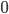
|

|
|
2
|
Let’s try inputting ‘a’ and
see where that leads us.
There’s only one transition we can go
down if we input ‘a’, so no new
simultaneous paths are created; we just stick
with our original one.
The ‘a’ path just goes from 0 to 0,
so our green path goes from ‘0’ to
‘0’.
|

|

|
|
3
|
Let’s try inputting a ‘b’ and
see where that leads us.
There are two paths that ‘b’ can
take us, from 0 to 0 or from 0 to 1. Here, our green path splits into two, one red and one blue.
The red one picks the path that stays on 0, and
the blue path picks the one that goes to
1.
Right now, there exists a path that is on a
final state: the blue one. Therefore, if we left
the string as just , this NFA will accept that string.
|
|

|
|
4
|
Let’s try inputting another
‘b’ and see where that leads
us.
The red and blue paths will both need to go
through a ‘b’ transition. Since the
blue path doesn’t have a blue transition
where it is, it’ll
‘die’.
The red path needs to go down a ‘b’
transition, too. There are two transitions that
the red path can go down, the one that goes from
0 to 0 and the one that goes from 0 to 1. Like
last time, the red path splits into two
different paths: a yellow path and purple
path.
The yellow path takes the transition from 0 to
0, therefore the yellow path is still on
0.
The purple path takes the transition from 0 to
1, therefore the purple path is now on 1.
The NFA should accept this string too, since
the purple path is on a final state.
|
|


|
-
Now, let’s formally construct an NFA:
-
is the set of all states
-
 is an alphabet
is an alphabet
-
is the transition function , which basically means input a state and a letter from the
alphabet and get a set of all states we could be in (see
‘Subset construction’)
-
is the start state
-
 is the set of final states
is the set of final states
-
Let’s formally construct the NFA as shown
above:
-
There is some notation that is worth noting:
-
When you see something like:
-
This means that the NFA will go from 0 to 2 if you input
‘a’, and then ‘b’. There should be
some intermediate state, either ‘0’,
‘2’, or even ‘1’, that you enter
when you input ‘a’ and leave when you input
‘b’.
Subset construction
-
It’s easy to convert DFAs into NFAs, because DFAs are
a subset of NFAs.
-
But how do you convert NFAs to DFAs?
-
You use subset construction. Basically, each state is a
subset of states that we could’ve gone to in our NFA
counterpart.
-
For example, in our NFA, if we’re in state 0 and by
inputting ‘b’ we can either go to 0 or go to 1,
in the DFA we’ll actually go to the state {0,1}
because we can go to either 0 or 1 in the NFA.
-
Let’s define an NFA , then let’s create a DFA which is based on :
-
This may look like an alien language to you now, but
I’ll go through each line and explain it in plain
English, then I’ll apply subset construction to the
example above.
-
First things first, what’s going on up there?
|
Line in weird maths language
|
Line in plain English
|
|
|
Here, we create an NFA with the parameters , , , and .
|
|
|
Here, we create a DFA with the parameters , ,  , and . The parameters , and are all dependent on the parameters for
the NFA . , and . The parameters , and are all dependent on the parameters for
the NFA .
|
|
|
is the set of all states, like . However, is the powerset of , so it’s the set of all subsets of , so for example,
Because of this, the states in the DFA is all
the subsets of , so you could have a state , a state or even a state  . .
|
|
|
From before, we know that is a transition function that defines how
we go from one state to the other. Therefore,
the inputs must be a state and a letter.
 is our state input. It’s actually a
set, which makes sense, because the states in
our DFA are all subsets of . is our state input. It’s actually a
set, which makes sense, because the states in
our DFA are all subsets of .
is our letter input. Nothing strange
here; it’s just a letter within the
alphabet .
Don’t be too confused with the that comes after. This simply means that,
for each NFA state in our input , we’re going to apply the NFA transition
function on that state with our input letter and put the result in our state
output.
More formally, is a bit like the sum in maths, except instead of adding all the terms, it
unions all the terms.
Remember that the transition function also
outputs a state. Since the states of our DFA are
subsets of , the DFA transition function also outputs a subset of .
For example, let’s say we input . The output will be . I’ll go over this in more detail in our
example below, but the point is that this
transition function just transitions all the
states in and unions them all together into one big
output.
|
|
|
The set of final states is a subset of .
For a DFA state to be a final state, it needs
to contain an NFA state that is in .
For example, if 0 is a non-final state and if 1
is a final state in the NFA, then in the DFA,
{0} would not be a final state, but {0,1} and
{1} would be final states.
That’s basically what the left expression
gets; a subset of where all elements contain at least one
final state from .
|
-
Now that we’ve got the formalities out the way, we
can work on an example. Let’s convert the NFA above
into a DFA.
-
As said above, we’ll define our DFA as and our NFA as , so we’ll go through this step-by-step by explaining
how we get each parameter for the DFA :
|
What we’re defining
|
How we did it
|
|
|
The value of is , so we just need to get the powerset of , or the ‘set of subsets’. This
is:
|
|
|
This is just the same as before, nothing new
here:
|
|
|
First of all, let’s create a transition
table. This is a table where the input letters
go on the top, the states go on the left, and
you can look up transition results by looking up
a state and a letter:
Now we work through this table from top to
bottom. First of all, there’s the empty
set state. You can’t go from any state
from the empty set state; it’s practically
a death state. So just input all empty set
states here.
Now we’re moving onto the singleton
states. For and , just have a look at the NFA and see what
states you’d end up at if you were at 0
and you took the paths labelled ‘a’.
As you can see, you’d just end up back at
0, so we just input there. As for and  , you can see that you can go to 0 or 1 using a
‘b’ path on 0, so we can input there. Continue this until we’re done
with all the singleton states. , you can see that you can go to 0 or 1 using a
‘b’ path on 0, so we can input there. Continue this until we’re done
with all the singleton states.
Now we’re faced with a state with more
than one element! Remember the definition from
before: we need to perform the transition
function on all the elements, then union the
results together. For example, on and , we need to union the results of doing and , and and . Just above the and cell, we can see the results of those. We
just need to union those together, by which I
mean, union and together. When we do that, we get , so in this transition table, when you input on the state , you get . Repeat this for all the states and inputs
until you finish the table.
Once you’re done, that’s pretty
much it! This transition table is your new
transition function for your DFA.
This video goes into more detail and I
strongly suggest it if you still struggle
with this.
|
|
|
It’s pretty much the same as the
original, but you encapsulate it in a set:
|
|
|
Get all the elements of :
{, , , }
Now get rid of the ones that do not have final
states in them:
{, , , }
So therefore, your new is:
{, }
|
ϵ-moves
-
An epsilon-move (ϵ-move) is a type of transition that
you can use without needing to “spend” or
“consume” any symbols.
-
It’s basically a free move.
-
An NFA that uses epsilon-moves are called
ϵNFAs.
-
They’re formally defined like this:
-
This is basically the same as an NFA, except transitions
now support epsilon-moves.
-
Here is an example of an ϵNFA:
-
From the starting state, you can go to the left-most state
and the right-most final state, all without consuming any
symbols.
-
You can also convert ϵNFAs to NFAs. Don’t
worry! It’s not as long as subset construction.
-
You only need to edit the transition function and the set
of final states.
-
With an ϵNFA we can create an NFA like so:
-
Your next line will be “Is this going to be
translated into plain English again?”
-
Please see below for a translation into plain
English.
|
Line in weird maths language
|
Line in plain English
|
|
|
We’re just defining an ϵNFA with
these parameters.
|
|
|
We’re just defining an NFA with these
parameters. These parameters will be based off
of the parameters for .
|
|

|
When you input a state and a symbol, the output
will be all the possible states it can reach to
using epsilon-moves and that symbol.
|
|

|
The new set of final states is a superset of
the old set of final states, meaning we still
keep the final states the same, but we add more.
We add the states that can epsilon-move towards
a final state.
|
-
Now I’ll go over an example, by converting that
ϵNFA above into an NFA:
|
What we’re defining
|
How we did it
|
|
|
First, let’s create that transition table
again. Just for example’s sake, I’m
calling the initial state 0, the left-most state
1 and the final state 2:
|
|
|
|
|
0
|
|
|
|
1
|
|
|
|
2
|
|
|
If you were at state 0 and had an input
‘a’, what states could you get to?
Well, you could go down the left epsilon-move to
get to state 1 and spend the ‘a’ on
going back to state 1. That’s pretty much
it, so here, we’d input just state
1.
If you were at state 0 and had an input
‘b’, what states could you get to?
You could go down the left epsilon-move and use
‘b’ to go to state 1 or use your
‘b’ to get to state 2. If you went
down the right epsilon-move, you wouldn’t
be able to use ‘b’, so you can
ignore it. Seems like you can get to states 1
and 2, so we put that in the transition
table.
We keep going like this until we fill out the
transition table:
This transition table is our new transition
function!
|
|
|
For this one, you could look at the final
states in the graph, and work your way back up
the epsilon-moves, looking for non-final states
that can epsilon-move to the final state.
As you can see in the graph above, if you start
at state 2 (the final state) and work your way
up the epsilon-move, you’ll find
yourself at state 0. Therefore, we can make state
0 a final state. However, you cannot go up to
state 1 from state 2, so state 1 cannot be a new
final state.
Obviously, we keep the old final states from
the ϵNFA:
|
Regular expressions and Kleene’s theorem
Defining regular expressions
-
A string s matches a regular expression 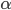 whenever
-
Regular expressions can be defined using atomic and
compound patterns
Atomic patterns
-
There exist the following atomic patterns, which do not
need to be broken down further:
|
Pattern
|
Matched by …
|
|
|
… the single symbol from the alphabet:
|
|
|
… the empty string
|
|
|
… nothing
|
|
|
… any single symbol from the alphabet
|
|
|
… any string formed by the symbols in (including the empty string), i.e. any
string in
|
Compound patterns
-
Compound patterns are defined recursively, based on the
atomic patterns.
|
Pattern
|
A String will match if ...
|
|
|
… it matches or
|
|
|
… it matches both and
|
|
|
… it can be broken down into two parts
such that the first part matches and the second part matches
|
|
|
… it does not match
|
|
|
… it matches 0 or more repetitions of .
|
|
|
… it matches 1 or more repetitions of .
|
Examples
-
All strings that end in “vita”:  or more elegant:
or more elegant:
-
All strings with an even number of a’s:
-
All strings with an odd number of a’s:
Kleene’s theorem
-
If is a regular expression then is a regular language.
-
All strings that match a regular expression form a
language. This language is regular.
-
If L is a regular language then for some regular expression .
-
If a language is regular, then there exists a regular
expression that matches all strings in that language (and
not more/less).
-
Therefore, we can conclude that finite automata and regular
expressions describe the same languages; they are equally
powerful.
-
In order to prove this theorem, we need to show that we can
convert a regular expression to a finite automaton and vice
versa.
Reg exp to εNFA
-
We will convert a regular expression to a
-
Basically, we’re going to split our regular
expression into “building blocks”, then
we’re going to convert those “building
blocks” into automata individually.
-
With each regex “building block”, we need to
show that we can build an automata out of it. In other
words, for each possible regex “building block”,
we need to show that it’s language is regular.
-
Once we’ve shown that all our building blocks are
regular, we can use said building blocks to build an
automata out of any regex expression.
-
We can prove we can convert by induction, as regular
expressions are built inductively.
-
This means that we can build any regular expression by
combining our atomic patterns, which results in a compound
pattern. Think of the atomic patterns as our basic building
blocks:
-
First we check if our basic building blocks are
regular.
-
Then we assume that the blocks we use to build compound
patterns are regular.
-
Then we check if the compound patterns are regular.
-
If they are regular we have completed the proof.
-
Let’s start with checking the base cases, these are
our basic building blocks, represented by atomic regular
expressions:
-
is regular:
-
is regular:
-
is regular:
-
These are all atomic regular expressions we have to
check, as # and @ are redundant, meaning that they can also
be represented by compound patterns.
-
Now, assume that the building blocks we use to build
compound patterns are regular. Then we will check if the
compound patterns are regular:
-
We have already proved above that the union of two regular
languages is regular.
-
It was also proved above that the concatenation of two
languages are regular.
-
Again, we have proved above that kleene star is
regular.
-
These are all compound regular expressions we have to check
as all other compound regular expressions are redundant,
meaning that they can also be represented by other compound
patterns.
-
Now we have completed the proof that from any regular
expression we can construct an automaton.
εNFA to reg exp
-
First of all, let’s simply state what we want to do.
We want to prove that there is always a way to convert an
εNFA to a regular expression.
-
is the set of states
-
is the alphabet
-
is the transition function
-
is the start state
-
is the set of final states
-
This is what we want: the regular expression which describes all possible paths
-
starting at the state u
-
ending at the state v
-
passing through 0 or more intermediary states, which are in
the set X.
-
It’s important to note that we do not need to pass
through any intermediate states in X, but we have the
opportunity to pass through as many as we want.
-
If we can define the regex mathematically, then we’ve shown that we can convert
an εNFA to a regex, thereby finishing our
proof.
-
We shall prove this by induction! In case you’ve
forgotten, proof by induction goes like this:
- Base case
-
Inductive step
-
Yes, there will be some weird maths language, but
don’t worry; I’ll translate it for you. It
sounds scary at first, but once you see the proof,
it’s not that bad:
|
Step
|
Weird maths language
|
Normal English + pretty pictures
|
|
Base case
|
Let
be all symbols such that
for
|
Firstly, our base case. The simplest case is going from the initial state to the
final state without going through any
intermediate states.
This is what we’re defining on the left
here; from top to bottom, we’re
defining
-
If the initial state isn’t the same
as the final state and there are transitions
from initial state to final state
-
If the initial state isn’t the same
as the final state and there are no transitions from initial state to final
state
-
If the initial state is the final state and
there are transitions from the initial state
to the final state
-
If the initial state is the final state and
there are no transitions from the initial state to the
final state
All those symbols are all transitions that go straight
from the initial state to the final state.
|
|
Inductive step
|
|
First, we have a proposition (assumption). We propose that exists and works.
Then, we define a out of . Once we do that, we’ve defined our
inductive step.
By doing this, we show that if there exists a
regex from u to v through intermediate states X,
there also exists a regex from u to v with
intermediate states X + {q}, where
‘q’ is any other state in the
automata.
This means we can keep adding on states from
our base case until we’ve filled in all the states in
our automata.
|
-
As you can see from the proof, we can just keep adding on
new states to our . That means we can add our initial state and final state
to this regular expression, and then append all the
intermediate states onto and it’ll work.
-
That’s great, but how do you actually convert an
εNFA to a regular expression? We’ve proved
that we can do it, so how do we actually do it?
-
Below you’ll see an example of how to actually
convert an εNFA into a regular expression. It
involves breaking down the regex you need by taking out
intermediate states, until you get something trivial, then
working your way back up again.
-
We need to find a regular expression that starts at state
A, ends at state C and passes through any of A,B,C zero or
more times.
-
Therefore, we are looking for
-
The starting state u is going to be A
-
The ending state v is going to be C
-
The set of states which we can pass through X is equal to
Q
-
Now, we are going to rewrite this regular expression using
the formula above
-
We are going to pull out one of the states from X
-
It is best to choose a state that reduces the paths we can
go a lot
-
I’m going to pull out B. This gives:
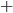
-
We can decompose this further into
-
It is up to you how far you decompose.
-
If you are able to see what the regular expression is right
away, you don’t need to decompose. However, if you
barely decompose, the chances that you miss a path are
high.
-
We could decompose what we have got now even further, but I
don’t think that it is necessary to do so as the
regular expressions for these are fairly easy to find.
-
Let’s take a look at the first decomposed regular
expression:
b + b(a+b)*(a+b) = b(a+b)*
-
Any string that starts with b or that starts with b followed by one or more mixed a’s
and/or b’s will be matched. This can be simplified into a string starting with b followed by zero or more mixed a’s and/or
b’s.
-
Let’s take a look at the second decomposed regular
expression:
a + ε(ε)*a = a + a = a
-
Any string that contains exactly one a will be
matched.
-
Let’s take a look at the third decomposed regular
expression:
 a + a(a+b)*(a+b) = a(a+b)*
a + a(a+b)*(a+b) = a(a+b)*
-
This is very similar to the first one. It will match a
string starting with a followed by zero or more mixed
a’s and/or b’s.
-
As you might have noticed, I didn’t decompose the
blue part. The reason for that is that the blue regular
expression starts and ends in the same state, meaning that
it can only take transitions to the state itself (if
exists):
-
b
-
Any string that contains exactly one b will be matched.
-
Now, let’s put together the regular expressions from
the coloured parts:
-
 b(a+b)* + ab*a(a+b)*
b(a+b)* + ab*a(a+b)*
-
This is the regular expression that is represented by this
NFA - we are done!
-
Often, there is more than one regular expression that is
represented by an automaton, meaning that there is no single
correct solution. For example, the regular expression (ab*a
+ b)(a + b)* is correct as well.
Limitations of regular languages
-
Is every language regular? No!
-
For example, look at the language
-
Our automaton has finitely many states.
-
It’s going to scan the string from the left to the
right, starting with the a’s.
-
Then, when it’s going to scan the b’s, it has
to remember how many a’s there were previously.
-
Since n can be infinitely big, there is no way to do this
with our finite number of states!
-
We are going to prove by contradiction that the language is not regular.
-
Suppose we have an automaton
 that accepts this language. Since the number of
states it has is finite, we are going to say that it has
that accepts this language. Since the number of
states it has is finite, we are going to say that it has  states.
states.
-
Next, we are going to choose
 such that . We can always find an that is greater than because is not bounded, i.e. can be infinitely large.
such that . We can always find an that is greater than because is not bounded, i.e. can be infinitely large.
-
Now, our automaton is going to start to scan the ’s from the left to the right. Since we have less
states than the number of a’s, there must be a state
we are going to enter at least twice (pigeonhole principle)!
We are going to call this state
 . Between the first time we enter and the second time we enter we are going to scan
. Between the first time we enter and the second time we enter we are going to scan  ’s. After the second time we entered our automaton is going to continue to the final
state.
’s. After the second time we entered our automaton is going to continue to the final
state.
-
When the automaton enters state for the first time, it goes on a path that leads it
to again. Then, after arriving at for the second time, it goes on a path that leads it
to the final state.
-
Here is the problem: Why arrive at , and then take a path that leads to again? Why not take the path that goes to the final
state upon arriving at for the first time? This means that our automaton
would accept a string with number of ’s. However, now the number of ’s is not anymore equal to the number of ’s and here we have our contradiction!
Pumping (🎃) Lemma for regular languages - contrapositive
form
-
We can use the contrapositive form of the pumping lemma for
regular languages to show that a language is not regular. We
cannot use the pumping lemma to show that a language is
regular!
-
It works by splitting up the language into parts, then
“pumping” a subpart until you get a string that
isn’t in the language. This is similar to what we have
just done before.
-
The different steps of the proof can be understood as a
game versus a demon.
-
The demon chooses a number such that .
-
We cannot choose a value for k, we only know that it is
greater than 0.
-
We choose a string
 such that
such that  .
.
-
We can choose any string that is within the language. However, we have to make sure
that, no matter what k is, our string is always in the language. We do not need to cover
the whole language with our string!
-
 and can be empty, there is no restriction concerning
them.
and can be empty, there is no restriction concerning
them.
-
The length of the
 part must be at least . A way to make sure that this is always the case is to let
the part be equal to something to the power of .
part must be at least . A way to make sure that this is always the case is to let
the part be equal to something to the power of .
-
due to the lower bound of k.
-
As a general tip, try to make as trivial as possible, like in the following
example:
-
For instance, we could let to make sure that is at least long ( is a symbol from the alphabet).
-
The demon splits the part of the string into such that , i.e. The whole string would be .
-
You cannot choose how the string is going to be split! All
you know is that the
 part of the string is not going to be empty.
part of the string is not going to be empty.
-
Therefore, you have to do a general case and define such that every way of splitting the string is
possible and we do not introduce any restrictions.
-
 and 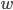 can be empty, there is no restriction concerning
them.
and 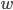 can be empty, there is no restriction concerning
them.
-
For instance, if , then and because v cannot be empty. Furthermore, the remaining
part . If we add the two parts, we are going to get back to . Also, we haven’t made any assumptions about how the
string is going to be split.
-
We pick an such that the string If this is the case we have proven that the language is not
regular!
-
We can pick any
 we want as long as it is equal to or greater than 0.
we want as long as it is equal to or greater than 0.
-
Our goal is to choose an such that the resulting string is outside of the
language.
-
For instance, and . If we now choose , we are going to get . We have now removed ’s compared to what we had as in the step before, which was . Also we know that
 , meaning that we removed at least one !
, meaning that we removed at least one !
-
You MUST say “Therefore L is not regular”, if you
don’t, you will lose marks.
-
If this still doesn’t make any sense, look at a few
examples below, and then read the general case above
again.
|
Example
|
Description
|
|
|
-
The demon chooses such that
-
Now choose a string and .
-
I’ll do it like , so and .
-
For every value of I will get a specific string which is
in the language of .
-
It is ok that I cannot get the empty string
( which is in the language) because I do not need to cover the
whole language.
-
The demon splits your into a such that
-
Now, we have to do the splitting in a
general case.
-
Since cannot be empty, then and .
-
Since , then .
-
We pick an such that the string
-
Now for this example, choose
-
Then as the number of b’s will be bigger
than the number of a’s, no matter what
value k is.
-
Therefore L is not regular
|
|

|
-
The demon chooses such that
-
Now choose a string and .
-
The demon splits your into a such that
-
, as it cannot be empty we have .
-
The remaining part because
-
We pick an such that the string
-
We pick

-
Then because the power we have got here is not
going to be a factorial!
-
Let me prove why this is not going to be a
factorial:
-
is going to be some factorial .
-
The next higher factorial is going to be .
-
However, our power is going to be in the middle of these
two factorials: Therefore, it cannot be a factorial!
-
If you still have some doubts, try it out
with the smallest k we could have, . Then choose the largest l we can choose, . So we have which holds. For any choice of the next higher factorial is going to
grow even faster, therefore this will always
hold.
-
Therefore L is not regular
|
|
|
-
The demon chooses such that
-
Now choose a string and .
-
I’m going to choose where
 is going to be the next prime number . Since the number of primes is infinite
this will always work, no matter how large is. is going to be the next prime number . Since the number of primes is infinite
this will always work, no matter how large is.
-
Therefore,
-
The demon splits your into a such that
-
The length of is going to be , so
-
Since we have
-
That’s all info we need to continue
our proof, you will see why in the next
step.
-
We pick an such that the string
-
We will pick
-
I’m going to show that the length of is not going to be equal to a prime
number, therefore it is outside of the
language.
-
, which is not going to be a prime number
since we also have a factor here but prime numbers should only be
divisible by 1 or itself (p).
-
Therefore,
-
Therefore L is not regular
|
|
and
|
-
The demon chooses such that
-
Now choose a string and .
-
I’m going to choose where and
-
-
The demon splits your into a such that
-
We pick an such that the string
-
Pick
-
Now and because we deleted at least one 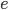 by letting .
-
Therefore
-
Therefore L is not regular
|
Automata theory: Context free languages
Pushdown Automata (PDA)
-
Pushdown automata are an extension to the automata we have
seen before.
-
We will take an and add a stack to the control unit.
-
The stack does not have a size limit, i.e. is infinitely
big.
-
More formally, a PDA is a 7 tuple
-
is the set of states
-
is the input alphabet
-
 is the stack alphabet (the set of things we can put
on the stack)
is the stack alphabet (the set of things we can put
on the stack)
-
is the transition relation (more detail see
below)
-
is the start state
-
 is the initial stack symbol
is the initial stack symbol
-
is the set of final states
Transition relation
-
Now, let’s take a closer look at the transition
relation :
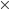
-
is the state the PDA is currently in.
-
is the symbol we are currently reading. This symbol
could be any symbol from our alphabet or epsilon, which
means that we can do epsilon moves by reading nothing!
-
is the symbol which is currently on top of the stack.
When we make a transition we are going to pop (remove) this
symbol from the top of the stack.
-
is the resulting state after we have made the
transition.
-
is going to be 0 or more symbols from our stack
alphabet that we are going to push on the stack when we make
the transition.
-
Let’s look at how one tuple of our transition
relation looks like:

 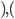
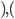
Here, we are in the state , we will read the symbol , and we see on top of the stack. We will then pop (remove) off the stack, go to the next state and push (add) on the stack. We will start pushing with and end with , such that we now have on top of the stack.
-
Keep in mind that if is not on the top of the stack, we cannot perform
this transition. Think of it as like a “second
input”.
-
Graphically, the transition looks like this:
Configuration
-
A configuration is a complete description of our PDA at a
certain point in time. It is represented as an element
of:
Configurations 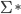
-
is the current state.
-
is the whole part of the input we still have left to scan/read.
Note that this is not only the next symbol.
-
is the whole stack content. Note that this is not only the
symbol on top of the stack; it’s the entire thing.
-
Therefore, every configuration will be of the form
Configurations
-
We can define relations between those configurations, which
tell us how to go from one configuration to the next
configuration. We have to distinguish between two cases: The
case when we consume a symbol from the input, and the case
where we don’t consume any symbol and take an epsilon
move.
-
Case 1: We consume a symbol. We write the relation
as:


when there exists such an element in

-
Case 2: We don’t consume a symbol and take an epsilon
move. We write the relation as:
when there exists such an element in
Acceptance
-
A PDA can accept a string either by empty stack or by final
state.
-
We can turn a PDA that accepts by final state into a PDA
that accepts by empty stack and vice versa.
By final state
-
A PDA will accept a string by final state if we can go from
the start configuration to a final configuration which
contains a final state and where we don’t have any
string left to scan/consume. Between those two
configurations there can be 0 or more other intermediary
configurations which we pass through.
-
Formally, this is written as:
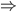
-
We will start at state s with the whole input string x
still remaining to scan, and our stack contains the initial
stack symbol only.
-
We will go through as many intermediary states as we want
to.
-
We will end in a state f where we don’t have anything
remaining to scan, and our stack content is g.
-
Therefore, the language accepted by the PDA is

By empty stack
-
A PDA will accept a string by empty stack if we can go from
the start configuration to a final configuration where the
stack is completely empty and where we don’t have any
string left to scan/consume. Between those two
configurations there can be 0 or more other intermediary
configurations which we pass through.
-
Formally, this is written as:
-
We will start at state s with the whole input string x
still remaining to scan, and our stack contains the initial
stack symbol only.
-
We will go through as many intermediary states as we want
to.
-
We will end in a state q where we don’t have anything
remaining to scan, and our stack is empty.
-
“Stack is empty” means that we do not have or any other symbol on the stack
-
Therefore, the language accepted by the PDA is
Example PDA accepting palindromes
-
A Palindrome is a string where the reverse of that string
is equal to the original string.
-
Examples: abba, abdba, aaaa
-
A PDA that will accept all palindromes by final state (and
also empty stack) looks like this:
where , i.e. is any symbol from our alphabet .
-
Let’s start from scratch and build a PDA that looks
like this.
-
We are going to differentiate between palindromes with an
even number of symbols and those with an odd number of
symbols
-
Our strategy for constructing the PDA that accepts
palindromes with an even number of symbols will be the
following:
-
We scan the word until we reach the middle of it.
-
Then we scan the second half of the word, expecting the
symbols from the first half of the word in reverse
order.
-
If this is the case, our word is a palindrome.
-
Now, we can assign a state for every step of our
strategy
-
We will be in state 1 when we scan the first half of the
word.
-
We will be in state 2 when we scan the second half of the
word.
-
We will be in the final state when we have finished
scanning the whole word and the reverse of the first half is
equal to the second half of the word.
-
Let’s think about our transitions for each of our
states:
-
We will stay in state 1 and keep adding the current symbol
to the stack if we haven’t reached the middle of the
word.
-
We will make a transition to state 2 when we have reached
the middle of the word, without changing the stack.
-
We will stay in state 2 and keep popping the current symbol
from the stack as long as the current symbol is equal to the
symbol of the top of the stack.
-
We will make a transition to the final state if our stack
contains only the initial stack symbol, and remove the
initial stack symbol.
-
However, there is still one problem: Palindromes with an
odd number of symbols, such as “abdba”. How to
deal with them? We can throw away the symbol in the middle!
For this example, it means that we throw away
“d” and we will check the remaining string
“abba”. We have already defined a PDA for
checking palindromes with an even number of symbols
above.
-
In order to integrate the “throw away the middle
symbol” action into our existing PDA we will add one
transition from state 1 to 2 where we consume a symbol but
don’t change the stack contents.
-
Now we have arrived at our final PDA, which is equal to the
image above.
-
Some questions you might ask yourself are:
-
How does the PDA know when it has reached the middle of the
word?
-
How does the PDA know that it has arrived at the middle
symbol of an odd string, which can be thrown away?
-
The answer is that the PDA is going to guess. The PDA can
do this because it is non-deterministic, similar to NFAs we
have seen before. In other words, the PDA can take any of
the transitions that are possible.
-
If we have a palindrome as a string and we process this
palindrome, there will be one combination of transitions
where the PDA will go into the final state at the end.
-
Let’s simulate our PDA on the string
“abcba”, which is a palindrome:
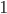


The PDA has reached state 2 and will therefore
accept.
-
Let’s simulate our PDA on the string
“abcde”, which is not a palindrome:
X at this point our computation dies because there is no
transition we could take (d ≠ b). Therefore the PDA will
reject.
Context free grammars
-
A CFG, consisting of terminal and non-terminal symbols, is
used to generate strings (sentences) by following its
production rules.
-
The terminal symbols are the symbols which will form the
string we are going to generate.
-
The non-terminal symbols are going to be replaced by other
symbols. These other symbols can be terminals, non-terminals
or a mix of both.
-
There exist so called “productions” which tell
us how to replace the non-terminal symbols.
-
We have to keep replacing non-terminal symbols until we
arrive at a string that consists solely of terminal symbols.
This process is called “derivation”.
-
The final string is also called a sentence.
-
Formally, a CFG is a quadruple
-
 is a finite set of nonterminal symbols
is a finite set of nonterminal symbols
-
is a finite set of terminal symbols
-
are the productions
-
is the start nonterminal
-
To define production rules …
-
we will use the shorthand
to mean
-
we will use the shorthand
to mean
-
To express that is derivable from we will write or
-
Without : This means that given the string , we have applied some production rules and arrived at
string
-
With : This means that given the string , we have applied exactly production rules and arrived at string
-
The language generated by a CFG G is the set of all its
sentences, i.e. the set of all strings that can be generated
by using its production rules.
-
The language generated is going to be equal to the set of
all strings x that are derivable from the start
non-terminal.
-
We can apply as many production rules as we want, as long
as we end with a string (sentence) that solely consists of
terminals.
-
This language L(G), generated by some CFG G, is called
context-free (CFL).
-
If it’s all still a bit too confusing for you, look
at the table below, where we convert context-free languages
into context-free grammars:
|
Language
|
Converting it to a grammar
|
|
|
-
Every string with the same number of
a’s followed by the same number of
b’s will be in the language.
-
We have shown that this language is not
regular, however, it is context free as we
can come up with a CFG for it.
-
The CFG is
-
We can produce 0 a’s and b’s,
i.e. the empty string, by applying only the
second production rule:
-
We can produce 1 a and 1 b by applying the
first production rule once and the second
production rule last:
-
We can produce 2 a’s and 2 b’s
by applying the first production rule 2
times and the second production rule
last:
-
Therefore, we can produce a’s and b’s by applying the first
production rule times and the second production rule
last.
-
We achieve this through pumping in the middle of the string every
time we want to add an and a .
|
|
|
|
|
|
|
|
|
|
|
L(G) is the set of all palindromes over the
alphabet
|
|
|
L(G) is the set of all balanced
parentheses
|
|
|
English, please
So you have a bunch of ‘a’s, then a
bunch of ‘b’s, then another bunch of
‘a’s.
There needs to be twice as many
‘b’s as ‘a’s.
Examples:
ε
abb
abbbba
bbbbaa
|
-
We know that and are just going to be repetitions of
the letter
-
We let , then we can use those for the number of
times we repeat the first and the last . We put and in the corresponding exponents to
denote these repetitions.
-
Simplify further:

-
We use and to denote repetitions of the letters,
so they can’t be negative. For
example, what would mean? It doesn’t make sense, as we
can’t repeat the letter minus one times.
-
We split
 into . No magic here, just exponent rules. into . No magic here, just exponent rules.
-
We can now split this into two grammars
which we will then concatenate, because
CFL are closed under concatenation.
-
One will be for the first half:
-
One will be for the second half:
-
Now, the final grammar will be the
concatenation of the grammar for the left
and the right part:
|
Chomsky Normal Form
-
A CFG is in Chomsky normal form (CNF) when all productions
are of the form
Two non-terminals are derivable by one non-terminal
One terminal is derivable by one non-terminal
-
Note that we don’t have here, therefore we cannot generate the empty
string.
-
Chomsky normal form is harder to convert into a PDA, but
it’s used in things like the CYK algorithm which
parses context-free grammars.
|
Language
|
CFG in Chomsky Normal Form
|
|
|
|
|
|
|
Greibach Normal Form
-
A CFG is in Greibach normal form (GNF) when all productions
are of the form
One terminal followed by non-terminals is derivable by one non-terminal
-
Note that we don’t have here, therefore we cannot generate the empty
string.
-
Greibach normal form makes it easier to show that there is
a PDA for every CFG, and can also be used with recursive
descent parsers.
|
Language
|
CFG in Greibach Normal Form
|
|
|
|
|
|
|
Removing epsilon and unit productions
-
A production of the form is called an epsilon production
-
Assume we have another production
-
We can get rid of the epsilon production and refine this
production
-
Our new refined and only production will be
-
A production of the form is is a called a unit production
-
Assume we have another production
-
We can get rid of this production and refine the unit
production
-
Our new refined and only production will be
-
Since we can remove both epsilon and unit productions, we
can conclude that for every CFG there exists another CFG
that accepts the same language, except that it cannot accept
epsilon:
Where is the grammar  but without any epsilon or unit productions
but without any epsilon or unit productions
Removing left-recursive productions
-
This is only required for conversion to GNF and therefore
not examinable
-
A left-recursive production looks like the following:
-
This rule generates a string starting with exactly one and ending with one or more

-
It is left recursive because when we want to generate more , we are going to prepend them to the string, i.e. we are
going to add them on the left side of the string.
-
In other words, we are generating the string from the right
to the left, starting with the rightmost (last)
symbol.
-
Every left recursive rule must have the part because it allows us to break out of our recursion,
i.e. it allows us to end “spamming” , by replacing the non-terminal
 with at some point in our derivation.
with at some point in our derivation.
-
We want to eliminate the left recursion in
-
We know this rule produces where
-
We can easily create
 with this new rule:
with this new rule:
-
Now, we need to add another rule to produce the in front:
-
So in total we need these two rules to eliminate the
left-recursion:
-
In general, we can have multiple alternatives that are
left-recursive, and multiple alternatives to break out of
our left-recursion. We have to get rid of all of them.
-
Our left-recursive production is in the form
-
For every alpha, we need the following new rule:
-
For every beta, we need the following new rule:
-
So all in all, we need the following rules for every alpha,
beta:
-
What? You still don’t understand?
-
No, don’t feel bad! Have a look at a few examples
below, they might help:
|
With left-recursion
|
Without left-recursion
|
|
|
|
|
|
|
|
|
|
|

|
|
-
You don’t get it? Yare yare daze... it’s
alright. There are just some topics that are really hard to
master. We won’t judge.
-
What better last-resort revision technique to fall back on
than Indian YouTubers?
-
For this topic, I recommend this one. Sure, he leaves his answers with epsilon productions,
but all the examples above are from this video and
it’s really easy to follow.
Converting between CFG, CNF and GNF
-
For any context-free grammar, there exists a corresponding
CNF and GNF that produces the same language, except
epsilon.
Converting a CFG to CNF
-
Remove all epsilon and unit productions like described
above
-
For all add a new nonterminal to our set of non-terminals
-
We will now have a new non-terminal symbol for each of our
symbols in the alphabet
-
We will use these later when we define some new
productions
-
In all productions, replace any terminal with the the non-terminal
-
We will replace all terminal symbols in every production by
the new non-terminal symbols we have generated in the step
before
-
Add productions to our set of productions

-
We will need those productions to produce the terminals,
since we replaced all of them with our new non-terminals.
-
While there exists a production
 ... with , i.e. while there exists a production that derives more
than 2 non-terminals and therefore cannot be in CNF
... with , i.e. while there exists a production that derives more
than 2 non-terminals and therefore cannot be in CNF
-
Remove this production from
-
Add a new non-terminal
 to
to
-
It has to have a different name in every iteration of this
“while-loop”
-
Add the following two productions to
-
Now our grammar is in CNF.
-
If this is a little hard to take in, try following through
the example below:
|
Step
|
Progress
|
Description
|
|
0
|
|
We haven’t done anything yet, I just
wanted to show you the grammar first before we
start converting it. It’s on the
left.
|
|
1
|
Remove
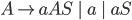
Remove
Remove
Remove
|
In this step, we’re simply removing the -productions and the unit productions, as
detailed in the previous section.
First, we remove the -production in A, but then it shifts it to
B.
So then, we remove the -production in B. We’ve gotten rid of all
the -productions, but now we’ve got to get
rid of all the unit productions.
We get rid of the unit productions in B and S.
For the one in B, we just replace it with
A’s contents, and for the one in S, we
just remove it, because is trivial.
|
|
2
|
|
In this step, we create a non-terminal for
every terminal that exists. I call these and .
|
|
3
|
|
In this step, I convert all terminals into
their respective non-terminals that I’ve
defined in the last step. At first, this
doesn’t make much sense, until the next
step...
|
|
4
|
|
In this step, I set up productions such that
the non-terminals can produce their respective
terminals. Now the previous step makes
sense!
|
|
5
|


|
In this step, I split up productions that have
more than 2 non-terminals. I create
non-terminals called so I don’t run out of names and so that I
know that any non-terminal called is just used for shortening.
Every red highlighted production is a
production I need to shorten, and the blue
highlighted production underneath is the
shortened version.
|
|
Finish
|
|
This isn’t really a step. I’ve just
compiled all the productions and put them into
one place, so you can see the finished CNF
result!
This grammar accepts the same language as the
one at the start, except now it’s in a
different form: Chomsky Normal Form.
|
Converting a CFG to GNF
This is not examinable according to Gennaro, but still worth
reading to give further insight into context-free
grammars.
-
Convert the CFG into CNF.
-
Re-order the rules such that the start rule is at the top,
the next derivable rules are below and so on. In other words it should be the case that for every
possible derivation we are going down in the list of rules
we have, but never up.
-
This will not always be possible, but try to order them as
much as possible according to this schema.
-
You can’t do anything wrong here, the purpose of this
ordering is to minimise the amount of work you will have to
do.
-
Replace all non-terminals with non-terminals of the form where is equal to the number of all non-terminals. Start
with the first rule at the top and work down, otherwise we
cannot benefit from the ordering we did in the last step.
-
Check if for every production , it is true that Check the rules in ascending order, i.e. start with
the rule where . If we find one rule where this does not hold, we must
modify this rule immediately before we continue to check
other rules. We have to deal with the following two
cases:
-
 in
in
-
Replace with whatever produces, i.e. derive
-
If for the resulting rule still , keep replacing until this is not the case anymore.
-
(left-recursive rule), so
-
Eliminate left recursion according to description above.
-
Now, we are taking a closer look at every production
starting with a non-terminal, i.e. every production which is
not in GNF yet. For all of those rules it must hold that where . Starting with the rule where the highest number and working in descending order, derive The result of deriving will be either a terminal symbol or two non-terminal
symbols:
-
If we get another non-terminal, repeat this step with the
current rule, i.e. derive the left-most non-terminal again,
check again, and so on.
-
If we get a terminal symbol, our production must be in GNF,
meaning that it starts with a terminal followed by some
non-terminals. This means that this rule is OK, we can leave
it as it is and continue to the next rule.
-
Rename all non-terminals back to their old names.
-
There might exist some rules which are unreachable from the
start symbol. Remove those rules.
-
Now, our grammar is in GNF. Congrats if you are not
confused at this point.
-
If you need to visualise this problem (or if you’re
masochistic), an example of this is provided below:
|
Step
|
Progress
|
Description
|
|
0
|

|
Here, we haven’t done anything yet!
This is the grammar we want to convert to
GNF.
Right now, it’s not in any normal
form.
|
|
1
|
|
In this step, we convert the grammar into CNF
using the method described above that you should
have read.
|
|
2
|
|
In this step, we reorder the steps so that,
when going through productions, you go from the
top and work your way down; you don’t go
back up.
Sometimes, this isn’t always completely
possible, for example the production uses  , which is further up. , which is further up.
|
|
3
|
|
In this step, we replace all non-terminals with , where is the position of the non-terminal from
the top to the bottom.
|
|
4
|
----------------------------
----------------------------
----------------------------

|
In this step, we look for any productions where .
There doesn’t actually exist any
productions in the example where this is true,
so I’ve created a sub-example to
demonstrate this step. This won’t affect
the example we’re working on. That’s
why the text looks like that.
In the first block, we notice the production where this condition is true. So we
replace  in that production with it’s
derivation. in that production with it’s
derivation.
Next, we notice that, in the production , , which means that we have left recursion.
Therefore, we introduce another non-terminal to
rectify this called .
Finally, on the last block, we notice that in . Therefore, we convert both non-terminals into
their derivations, which happen to be single
terminals.
With this, we’ve completed this
step.
|
|
5
|
----------------------------
----------------------------
----------------------------
|
In this step, we look at all the productions
that are not in GNF, and we substitute
productions until all the productions are in
GNF. We start with the highest rule (which is
the furthest down in our list) and work in
descending order.
For example, in the first block, is not in GNF. So we substitute ’s production into it, making the first
part ‘a’.
Next, is not in GNF, so we substitute the same thing
in that, and we get .
After that, the only production that is not in
GNF is . So we substitute into that one, and we get .
There are no longer any more productions that
are not in GNF. We’re now in Greibach
normal form! But we’re not done yet; our
non-terminal symbols are all . We need to change them back.
|
|
6
|
|
In this step, we’ve just renamed our
non-terminal symbols back to normal.
|
|
7
|
|
In this step, we’re just getting rid of
any productions that are unreachable /
unused.
In this example, the productions for and are never used, so they are
deleted.
|
PDA and CFG conversions
-
PDAs and CFG have the same power, therefore we can convert
a PDA to a CFG and vice versa.
CFG to PDA
-
We will do this by first converting a CFG into GNF, and
then converting GNF into a one state PDA.
-
Assume that our Grammar is in GNF. Then all productions
will look like:
where
One terminal followed by non-terminals is derivable by one non-terminal
-
The PDA we are going to construct will only have one state
and will accept by empty stack.
-
We are going to call the one and only state .
-
Formally, this means that the PDA will accept the string when there exists a derivation:
-
Therefore, the PDA we will construct is going to be of the
form:
|
|
representing
|
is defined as
|
because
|
|
|
set of states
|
a singleton set containing the state
|
we will only have a single state in this
PDA
|
|
|
input alphabet
|
terminal symbols of CFG
|
these are the symbols, produced by the grammar,
which our PDA is going to scan
|
|
|
stack alphabet
|
non-terminal symbols of CFG
|
this is what we will push on/pop off the
stack
|
|
|
transition relation
|
see below
|
see below
|
|
|
start state
|
the state
|
we only have a single state, so we don’t
have much choice where to start.
|
|
S
|
initial stack symbol
|
the start production of CFG
|
we won’t have anything on the stack when
we start scanning our string
|
|
|
final states
|
empty set
|
our PDA will accept by empty stack, therefore
we don’t need any final states.
|
-
Now, we still need to define the transition relation.
-
We are going to add an element to the relation for every
production we have in our grammar.
-
Therefore, for each , add a transition:
-
Example for the grammar of the language
-
The resulting PDA will have
-
A set of states
-
The input alphabet

-
The stack alphabet
-
The start state
-
The initial stack symbol
-
The transition relation as shown in the following
graphic:
-
If we want to test if our PDA accepts the same language as
our grammar, we can try to match every derivation of our
grammar with a transition in our PDA
-
We will do this by giving the leftmost derivation, which
means that productions are only applied to the leftmost
non-terminal in every step.
|
Grammar derivations
|
PDA transitions
|
|
|
|
|
|
|
|
|
|
|
|
|
|
|
|
PDA to CFG
-
This proof is pretty much just the previous proof, but in
reverse!
-
The steps we will go through are as follows:
-
Prove that one-state PDAs can be converted to a CFG
-
Prove that any PDA can be converted to a one-state
PDA
-
As you can see, the law of transitivity show that by doing
this, we will prove that any PDA can be converted into a
CFG.
-
First, we will prove that one-state PDAs can be converted
to a CFG.
-
The obvious thing to do first is to start off with a
PDA:
-
Now we’re going to create a grammar (in GNF) like
this:
-
This is just the previous proof in reverse, so if you
understood that, you’ll get this.
-
If you don’t, I’ll translate that maths
language above for you:
|
Line in weird maths language
|
Line in plain English
|
|
|
This one’s nice and simple; I’m
just defining a PDA with only one state, .
is the alphabet that the PDA
accepts
is the set of symbols accepted onto the
stack
is the transition function
is the initial stack symbol
Where it says just means that there is no final state;
this PDA will accept by empty stack.
|
|
|
Again, I’m just defining a grammar.
is the set of non-terminal symbols
(notice how it’s the same as the set of
symbols accepted onto the PDA stack)
is the set of terminal symbols (notice
how it’s the same as the alphabet that the
PDA accepts)
is the set of productions
is the start non-terminal (notice how
it’s the same as the initial stack symbol
in the PDA)
|
|
|
For every transition that exists in the PDA,
there is also a production in the grammar that
takes in the input stack symbol, and outputs the
input symbol followed by all the stack symbols
put into the stack.
|
-
Just by simply reversing the previous proof, we can show
that a single-state PDA can be converted to a CFG.
-
But not every PDA is a single-state PDA. To complete the
proof, we need to convert any PDA into a single-state
PDA.
-
Now, we will prove that any PDA can be converted to a
single-state PDA.
-
To convert a PDA to a single-state PDA, we need to store
the state information inside the stack (since we’re
not going to be moving to any state).
-
Before we do that, let’s change the PDA a little
bit.
-
Let’s change it so that when the PDA reaches a single
final state, it can clear it’s entire stack.
Basically, we’re changing it so the PDA only has one
final state.
-
Second, we’re going to introduce a new type of stack
symbol. It looks like this:
-
where and
-
All the new stack symbols will be in a new set called
-
We do this so we can store state information on the
stack.
-
We’re also going to change to just , where is the name of the only state in the PDA.
-
So, basically, our PDA looks like this:
-
What is ? Well, it’s defined as follows:
-
To some people (normal people), this is just maths
gibberish; what does this actually mean?
-
Remember that PDAs are also nondeterministic. Here, each
guess the PDA makes, the stack “predicts” what
transitions it’ll go through in the future. If the prediction is correct, it’ll pass. If the
prediction is wrong, that guess will
“die”.
-
In other words, at each stage, we nondeterministically
guess the remainder of the computation of the automaton and
then verify it.
-
This is just a way of encoding the non-deterministic nature
of the states into the stack.
-
This is really hard to visualise just by reading the
descriptions, so let’s go through an example.
-
We have a PDA here that maps out the language 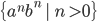:
-
Before we pick out transitions, let’s have a look at
all the possible stack symbols:
-
You can think of each of these as like a possible
transition that the PDA could take.
-
For example, could refer to the transition going from state 1 to 1,
accepting on the stack.
-
Yes, there are some transitions that do not exist, like or, but they could exist. The stack doesn’t know what
transitions exist, so it guesses with all possible
combinations of transitions. The guesses that predict
transitions that do exist will live and are more likely to
predict everything correctly, and the guesses that predict
transitions that do not exist end up dying.
-
Let’s pick out a transition from this and convert it
to its single-state equivalent.
-
Let’s pick the transition that goes from state 0 to 0
with ⊥ on the stack:
-
So if we compute that transition, our single-state PDA will
compute 3 parallel guesses, depending on what’s on the
stack.
-
Let’s pick out a simpler transition and convert
that:
-
Since this transition will only pop from the stack and not
push, it’ll only generate one transition relation for
our single-state PDA:
-
So in our single-state PDA, if it seeson the stack, that means the guess’ prediction was
correct and the guess will live. If it does not see that on
the stack, the guess’ prediction was wrong and will
die.
-
Now that we’ve defined these, let’s try
inputting a string into this multi-state PDA, and see how
it’s single-state equivalent works by comparing the
two.
|
Multi-state PDA
|
Single-state PDA guesses
|
Description
|
|
|
|
We haven’t really done anything
yet.
The initial stack symbol in a single-state PDA
is always:
This is possible because there’s only one
initial state and, like what we’ve defined
before, only one final state.
|
|
|

|
We’ve inputted an ‘a’ as
input, and now our single-state PDA has started
guessing!
As you’ve (hopefully) read above, three
guesses will be made in this situation; a was read from the stack and an ‘a’
input was read, and now the following three
guesses have been established.
These three guesses go like this:
What if we go from state 0 to state 0 using
‘a’ on the stack, then go from state
0 to state 2 using floor?
What if we go from state 0 to state 1 using
‘a’ on the stack, then go from state
1 to state 2 using floor?
What if we go from state 0 to state 2 using
‘a’ on the stack, then go from state
2 to state 2 using floor?
I admit, some of these guesses are a little
(really) dumb, but can you blame them? The stack
doesn’t know what transitions exist; it
doesn’t know that there isn’t a
transition from state 0 to state 2. So what does
it do? It guesses. It guesses every single
combination so that if it gets something wrong,
it can fall back on another guess. If all the
guesses are wrong, then there’s no way the
PDA can accept the string.
|
|
|


|
Wow! Look at all those guesses!
We’ve inputted another ‘a’
into our PDAs, and now, we’re
exponentially making guesses. None of our
guesses have died yet.
Because we’re pushing more than
we’re popping, we’re making more
guesses about what we want to do next; there are
more possibilities now.
The transition here is slightly different,
because we’re not using floor ⊥, but
the concept is still the same.
What? You want to see how this transition is
converted to it’s single-state PDA
equivalent? Well, alright, but only because you
asked so nicely:
Converts to:
|
|
|
-------------------------------------


|
Oh no! The guesses! They’re dying!
We’ve taken the transition:

...which converts into:
So, what the single-state PDA is doing is,
it’s looking for a on the stack. If it’s there, the
guess is right, it just pops it off and
doesn’t push anything else on. If
it’s not there, the guess is wrong and the
guess dies.
As you can see, 6 guesses died, leaving only 3
guesses from each coloured partition.
The top guesses show which ones survived and
which ones died from the previous configuration
(the gothy red and black ones are the ones that
died).
The bottom 3 guesses shows the top 3 living
guesses after their ‘b’s have been
inputted and stacks have been popped.
|
|
|
-------------------------------------
|
We’ve taken the transition:
... which converts to:
So, like before, it looks for a on top of the stack. If it’s there, we
live. If it’s not there, we die.
There’s only one guess here with a ! This guess has correctly predicted every move
that the PDA has done. Congratulations,
guess!
So now, we pop off and continue.
The existence of this guess is enough to accept
the inputted string, right?
Almost. There’s one formality we need to
take care of first: we need to move to state 2,
the final state, to properly conclude this. Will
this last-standing guess be able to conquer the
final step by predicting the final transition
from state 1 to state 2?
Spoilers: it does
|
|
|
|
It should be needless to say that this final
transition looks for a to pop, and finds one within the final
guess.
We can now accept by empty stack. This string
is within the language of this PDA, and this
single-state PDA is equivalent to this
multi-state PDA!
|
-
If it helps to visualise it better, here’s the
successful guess from start to finish:
Proving closure
Union
-
CFLs are closed under union
-
This means that the language of the union of two CFGs is
also going to be context-free
-
We are going to create a grammar that is the union of two
other grammars.
-
We can assume that the non-terminals of our two grammars
are going to be distinct, meaning that we don’t have
non-terminals that appear in both grammars.
-
If we have, we are just going to rename them, it
won’t change the grammar.
-
Let’s introduce a new start symbol and a new
production for this new start symbol.
-
The new production is going to link our new start symbol to
the old start symbols from our two grammars like this:
Where is the start symbol of the first grammar and  is the start symbol from the second grammar
is the start symbol from the second grammar
-
As for the other non-terminals and the other productions,
we are just copying them from what we have in our two other
grammars.
-
Now we can generate everything that the first grammar is
able to produce by deriving and we can also generate everything that the second
grammar is able to produce by deriving
Concatenation
-
CFLs are closed under concatenation
-
This means that the language of the concatenation of two
CFGs is also going to be context-free
-
Proving this is exactly the same as proving the union, just
that our start production is going to be different:
Where is the start symbol of the first grammar and is the start symbol from the second grammar
-
Now we can generate everything that the first grammar is
able to produce by deriving and then we can generate everything that the second
grammar is able to produce by deriving
Kleene star
-
CFLs are closed under kleene star
-
This means that the language of 0 or more repetitions of a
CFG is also going to be context-free.
-
We are going to create a grammar that represents kleene
star of another grammar.
-
Let’s introduce a new start symbol and a new
production for this new start symbol.
-
The new production is going to look like this:
Where is the start symbol of the other grammar.
-
As for the other non-terminals and the other productions,
we are just copying them from what we have in the other
grammar.
-
Now we can produce 0 or more repetitions of everything that
the other grammar is able to produce by deriving or from
Intersection with regular languages
-
CFLs are closed under the intersection with regular
languages
-
This means that the language of a CFG intersected with a
regular language is going to be context-free.
-
In contrast, the intersection of two CFL is not always
context-free.
-
Idea: Product construction with PDA and DFA.
-
The slides don’t go into more detail than that, but I
will.
-
Let’s give our automata names, because that makes
them easier to work with. Let’s call our DFA and our PDA .
-
DFAs are just weak PDAs, so we can convert our DFA into a PDA. It’s basically just going to be a
PDA that doesn’t use it’s stack and
doesn’t use any non-deterministic features.
Let’s call this , where .
-
So now we have two PDAs, and . We need to perform product construction on these, so that
we can construct a PDA that accepts strings accepted by both and (because that’s what intersection means).
-
Let’s call this product construct-ed PDA . Normally, product construction with PDAs don’t
work, because they interfere with each other on the stack
(they have to share a stack). However, this case is
different. How do we know that and don’t interfere with each other on the
stack?
-
We know they don’t interfere because doesn’t even use the stack! Remember,
it’s just a DFA calling itself a PDA; it doesn’t
even use the stack. Heck, it can’t even use any
non-deterministic features, or any epsilon-moves. The stack
is completely free for to use.
-
Because we’ve defined a PDA that supports the
intersection of regular languages, we’ve shown that
it’s closed. We can convert this PDA into a
context-free grammar, showing that the language represented
by this PDA is context-free, therefore showing that the
intersection with regular languages is closed.
Limits of context-free languages
-
Are all languages context free? No!
-
E.g. the language is not context-free, meaning that we cannot construct
a PDA that accepts or a CFG that produces this language. In
fact, we would need a Turing machine to accept this
language, which we will see later.
-
Assume our grammar is in CNF
-
Remember that we can convert any grammar to CNF if it
isn’t
-
I’m going to use the following CNF for further
explanations:
-
Which represents the language
-
If we start deriving a string using our CNF, we can draw
the process of deriving the string as a binary tree.
-
For instance, let’s derive and draw the derivations as a binary tree:
-
We can see that in the middle path of the tree, we have a
long path of non-terminals. We will have this in every
derivation which is long enough (we’ll define what
long enough means below).
-
We can also see that there some non-terminals are
repeated.
-
If we go one step down in the tree, we are going to at most
double its width
-
This is because our grammar is in CNF, which allows us to
derive at most 2 non-terminals in a single rule.
-
Therefore, the derivation tree of a string of size must have a depth of at least
-
Suppose that there are non-terminals. In any derivation tree of a string of
length at least
 there must be a path where some non-terminal appears
at least twice, i.e. is repeated.
there must be a path where some non-terminal appears
at least twice, i.e. is repeated.
-
The derivation tree of a string of size must have a depth of at least
-
However, we only have non-terminals, therefore we need to repeat at least
one of our non-terminals.
-
If we see a repeated non-terminal, we can start pumping
this non-terminal into the tree.
-
Here, we split our tree into where the tree generated by the blue covers and the tree generated by the red covers only. Everything outside of the blue will be covered by and

-
Now, we are copying the subtree of the blue and paste it into the position of the red .
-
Every time we do this, we are essentially adding another
part and another part to our tree.
-
We can also replace the subtree of the blue with the subtree of the red . By doing this we are taking and out of the tree completely.
-
This act of ‘removing’ and ‘pumping
in’ and forms the basis for the pumping lemma for
context-free languages.
Pumping (🎃) Lemma for context-free languages -
contrapositive form
-
We can use the contrapositive form of the pumping lemma for
context free languages to show that a language is not
context free. We cannot use the pumping lemma to show that a
language is context free!
-
It works by splitting up the language into parts, then
“pumping” a subpart until you get a string that
isn’t in the language. This is similar to what we have
just done before.
-
The different steps of the proof can be understood as a
game versus a demon.
-
The demon chooses a number such that .
-
We cannot choose a value for , we only know that it is greater than or equal to 0.
-
We choose a string such that
 .
.
-
We can choose any string that is within the language. However, we have to make
sure that, no matter what is, our string is always in the language. We do not need to cover
the whole language with our string!
-
The length of must be at least . A way to make sure that this is always the case is to
have at least a part in that is equal to something to the power of .
-
As a general tip, try to make as trivial as possible, like in the following
example:
-
For instance, we could let to make sure that is at least long ( are symbols from the alphabet).
-
The demon splits into such that , i.e. , and
-
You cannot choose how the string is going to be
split!
-
What you do know is that the part of the string is not going to be empty. However,
one of or can still be empty.
-
You also know that the length of the is at most .
-
You can think of as a window you can slide across what you defined as .
-
Therefore, we have to list all possible cases in which can be split and proceed with each of them to the
next step.
-
For instance, if , we have to consider the following cases:
-
Case 1: contains only one repeated letter: Either only ’s, or only ’s, or only
 ’s
’s
-
Case 2: either or (but not both) is a word that contains more than one
kind of symbol.
-
Case 3: and do not have any symbols in common.
-
It cannot be the case that contains all three letters because the length of is at most .
-
We pick an such that the string If this is the case we have proven that the language is not context-free!
-
We can pick any we want as long as it is equal to or greater than
0.
-
Our goal is to choose an such that the resulting string is outside of the
language.
-
We have to do this for every case we defined in the
previous step.
-
Here is how to do it for the example cases above:
-
Let
-
Case 1: contains only one repeated letter: then is going to have either too many of , or
-
Case 2: either or contains two different symbols: then is going to have too many of two of , or .
-
Case 3: does not contain the same symbol as . then is going to have too many of two of , or .
-
You MUST say “Therefore L is not context-free”, if you
don’t, you will lose marks.
-
If this still doesn’t make any sense, look at a few
examples below, and then read the general case above
again.
|
Example
|
Solution
|
|
|
-
The demon chooses a number such that .
-
We choose a string such that .
-
Let’s choose .
-
We can see that .
-
The demon splits into such that , i.e. , and
-
Let’s consider all the different
cases:
-
Case 1: contains only one repeated letter:
Either only ’s, or only ’s, or only ’s
-
Case 2: either or (but not both) is a word that
contains more than one kind of letter.
-
Case 3: and do not have any letters in
common.
-
We pick an such that the string
-
Our resulting word will have one letter
repeated more often than the other two
letters.
-
Our resulting word is not going to be of
the form a*b*c*.
-
Our resulting word is going to have more of
two of the letters but the number of
occurrences of the third letter remains
unchanged.
-
Therefore, L is not context-free
|
|
|
-
The demon chooses a number such that .
-
We choose a string such that .
-
Let’s choose .
-
We can see that .
-
The demon splits into such that , i.e. , and
-
Let’s consider all the different
cases:
-
Case 1: contains only one repeated letter:
Either only ’s, or only ’s.
-
Case 2: either or (but not both) is a word that
contains more than one kind of letter.
-
Case 3: and do not have any letters in
common.
-
We pick an such that the string
-
We are changing the number of either the ’s or the ’s. Therefore, the number of ’s won’t be eight times the
number of ’s anymore.
-
Our resulting word is not going to be of
the form a*b*a*.
-
We are changing the number of either the
first
’s and the ’s or the ’s and the second ’s. Therefore, the number of the first ’s won’t match with the number of
the second ’s anymore.
-
Therefore, L is not context-free
|
|
|
-
The demon chooses a number such that .
-
We choose a string such that .
-
Let’s choose .
-
We can see that .
-
The demon splits into such that , i.e. , and
-
This time we only have to consider one case
as we only have one letter in our window
-
We know that we have at least 1 and at most ’s in our window, which we are going
to pump in the next step.
-
We pick an such that the string
-
pick
-
where we define l to be
-
Define the bounds of to be
-
This is because and
 when when 
-
I know that because its length, , cannot be expressed as some number .
-
This is because is going to be strictly between and :
-
If you have doubts, check the bounds of again and also try to plug in and (imagine you are the demon)
-
Therefore, L is not context-free
|
Computability theory
Turing machines
-
With DFAs and NFAs, we had states and transitions.
-
With PDAs, we had states, transitions and a stack.
-
Now, with Turing machines, we have states, transitions and
a “tape”, which is basically a linked list
storing the input string at each node.
-
With this new data structure at our disposal, we can do
even more things than PDAs.
-
In fact, according to the Church-Turing thesis, Turing
machines (TMs, not to be confused with Pokémon TMs)
are just as powerful as algorithms.
-
However, TMs do not cover all languages. They’re not that good. See Undecidable Problems for languages not covered by
TMs.
-
So, what exactly are TMs? I’ll go through them informally and then formally.
- Informally
-
They’re basically like PDAs, but instead of a stack,
you get a tape, where you can move left or right on each
transition.
-
You can think of the tape as like a doubly linked list,
where you can traverse left and right.
-
The input string is on the tape, and we start at the far
left and usually work our way to the right.
-
Here is an example of a tape in the middle of a TM
execution:
-
The ⊢ symbol means the ‘start’,
it’s a left marker.
-
The ⊔ symbol means ‘empty’, there’s
nothing here.
-
The ⊣ symbol means the ‘end’, it’s
a right marker.
-
The part that’s shaded in red is the current position we’re on, and the other blue parts are all the other positions.
-
Formally
-
Formally, a TM is a 9-tuple:
- where
-
is the finite set of states
-
|Q| ≥ 3 : accept, reject and start states as well as
other states
-
is the input alphabet
-
is the tape alphabet (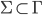 : the input alphabet is a proper subset of the tape
alphabet)
-
is the left endmarker (left endmarkers are part of
the tape alphabet, but not the input alphabet)
-
is the blank symbol (blanks are part of the tape alphabet, but not the input
alphabet)
-
is the transition function
-
In English, it’s in the form
 where
where
-
is a possible state that is not the accept / reject state
-
is a tape symbol that must be at our current position
on the tape
-
is a state to go to
-
is a tape symbol to write to the tape
-
is either left
 or right
or right  , to traverse the tape
, to traverse the tape
-
is the start state
-
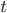 is the accept state
-
is the reject state
-
When performing transitions, we cannot overwrite and we cannot move left if we’re at the left
endmarker.
-
We can write element in onto the tape (including ⊢ and ).
Decidability
Recursive and R.E languages
-
A total turing machine is a TM that halts on every input (does not loop
infinitely)
-
A turing machine that isn’t total can hang (like
Microsoft Visual Studio)
-
A language is recursive if there exists a total Turing machine that accepts
it.
-
A language is recursively enumerable (r.e) if there exists a Turing machine that accepts
all of the strings in that language.
-
Remember that all recursive languages are recursively
enumerable: R ⊂ R.E
Proof: Recursive Sets Closed under Complement
-
Recursive sets are closed under complement (if L is recursive, ~L is also recursive)
-
Remember how we proved DFAs are closed under complement?
It’s the same ordeal here.
-
Let’s say we have a language ‘A’ that is
accepted by a TM ‘M’. If we can construct a TM
for ~A, then we can prove this lemma.
-
Just swap the accept state and the reject state. This way,
~A will accept .
-
In other words, whenever A accepts something, ~A will
reject it, and whenever A rejects something, ~A will accept
it. That’s literally the definition of a
complement!
-
Lemma: If L and ~L are r.e, then L is recursive
-
Let’s say that the TMs ‘M1’ accepts
‘L’ and ‘M2’ accepts
‘~L’.
-
If we can construct a total TM ‘N’ that
simulates both M1 and M2, then we can show that this lemma
is true.
-
Why the existence of N proves this lemma:
-
M1 accepts everything in L, so it never hangs for strings
in L.
-
M2 accepts everything in ~L, so it never hangs for strings
that are not in L.
-
When ‘N’ simulates M1 and M2, that means if M1
accepts, N accepts, and if M2 accepts, N rejects, so that the language of N is the same as M1.
-
But M1 never hangs for L, and M2 never hangs for anything
not in L. If ‘N’ will halt when either M1 or M2
halts, that means ‘N’ will never hang for L and never hang for anything not in L. But that just means ‘N’ will halt on any string!
-
Therefore ‘N’ won’t hang on any string, making the language L recursive.
-
Constructing N:
-
We need to create a TM ‘N’ that simulates both
M1 and M2.
-
Remember subset construction back in Automata theory? Well,
this is similar to that.
-
Basically, we have two tapes, stuck to each other. The top
tape is M1, and the bottom tape is M2. and ~L
|
⊢
|

|

|
|
|
|
⊢
|
|
|
|
|
-
But how do we know what position M1 and M2 are at?
Currently, we can only select
 and
and  together, where is the same number for both ‘a’ and
‘b’, like 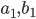 or
together, where is the same number for both ‘a’ and
‘b’, like 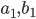 or  .
.
-
That’s why we introduce a ‘hat’:
-
Now we know what position M1 and M2 are on! For example, if
our simulation of M1 is on the tape element and our simulation for M2 is on the tape element , we can represent that on our tape like so:
|
⊢
|
|
|
|
|
|
⊢
|
|
|
|
|
-
Now that our tape is all set up, all we have to do is set
the instructions for the TM to follow:
-
Scans the tape to find a symbol with a hat in the
"upper" section of the tape. Then, according to
the transitions of M1, it performs M1’s move.
-
If M1 accepts then N accepts;
-
Scans the tape to find a symbol with a hat in the
"lower" section of the tape. Then, according to
the transitions of M2 , it performs M2’s move.
-
If M2 accepts then N rejects;
-
Go back to step 1
-
The states work just like subset construction; we have
tuples as states, in the form:
-
(,)
-
Where is a state in M1 and is a state in M2.
-
To complete this formal proof, all we need now is a short
statement to show that ‘N’ is total:
-
“Any is either in or : So it is accepted by either M1 or M2. So N will
eventually accept or reject, thus N is total and so is recursive.”
-
Just like that, the proof is done!
-
Lemma: If L is r.e and not recursive, ~L is not r.e
-
Let’s say TM ‘M1’ accepts
‘L’. If ‘L’ is r.e and not
recursive, then that means ‘M1’ loops on some
strings that are not in L (which are instead in ~L)
-
Let’s try to construct a TM ‘M2’ that
accepts ~L. This Turing Machine would have to accept all
strings that are not in L.
-
However, as stated before, ‘L’ is not
recursive, so ‘M1’ loops on some strings that
are not in L. Because ~L is every string that is not in L,
M2 would have to loop on some strings that are in ~L,
meaning that M2 can never fully accept ~L, and no Turing
Machine can ever accept ~L, making it not recursively
enumerable.
(Semi) Decidable properties
-
First of all, let’s define what a property is. A property of a string is a predicate that tells you
something about the string. It is either true or false.
-
A few examples are:
-
The string has length 2 : {w | #w = 2}
-
There is a letter ‘g’ in the string : {w | ‘g’ ∈ w}
-
There is an even number of letters in the string : {w | #w
mod 2 = 0}
-
The string contains the substring “jojo” : {w | “jojo” ∈ w}
-
A property is decidable if all strings with that property form a language that is
recursive.
-
For example: the property that the given string is equal to
“duwang” (because all finite languages are
recursive)
-
A property is semi-decidable if all strings with that property form a language that is
recursively enumerable.
-
For example: the property that the given string is an
encoding for a Turing Machine that halts (you can simulate
the TM and accept if it halts, but if it loops, then your
simulation will loop, making this recursively enumerable but
not recursive).
-
semi-decidable ⇔ recursively enumerable
-
decidable ⇔ recursive
Universal Turing machines
Multiple tapes
-
Are TMs with multiple tapes more powerful than TMs with
only one tape?
-
No! Remember the section “Recursive and R.E
languages” where we constructed a dual-tape TM out of
a single-tape TM?
-
We can apply the same logic, but with any number of
tapes.
-
If we can make a multi-tape TM out of a single-tape TM,
that means multi-tape TMs are just as powerful as
single-tape TMs.
Simulating Turing machines
-
Turing machines are so powerful that they can simulate
other Turing machines! Think of it like a virtual machine,
like VMware or VirtualBox.
-
These Turing machines are called Universal Turing machines
(UTM).
|
Weird maths language
|
Plain English
|
|
There exists a TM  such that such that
Where  is an encoding of the TM ‘M’,
followed by a ‘#’, followed by an
encoding of ‘x’ in M’s input
alphabet. is an encoding of the TM ‘M’,
followed by a ‘#’, followed by an
encoding of ‘x’ in M’s input
alphabet.
|
Like all Turing machines, they have a string
input.
Universal Turing machines only accept strings
that fit this pattern:
... which is an encoding of the TM
‘M’, a separating character (in this
case #), and the encoding of the input string
‘x’.
First of all, the UTM checks if M#x is a valid
encoding. If it isn’t, it’ll reject
it straight away.
If the TM ‘M’ accepts
‘x’, then the UTM will accept
M#x
If the TM ‘M’ rejects
‘x’, then the UTM will reject
M#x
The UTM does this by simulating M on
‘x’. If it finds that M accepts,
then the UTM will accept. If it finds that M
rejects, then the UTM will reject.
|
-
We use UTMs without even thinking about it, for example
interpreters (for Java, Python, Ruby etc.) and virtual
machines.
Encoding Turing machines
-
So how do you actually encode a TM and an input into
M#x?
-
Well, the details aren’t really important, but
there’s a method from the Kozen book that converts all
TM parameters into numbers, and then encodes them into one
big number like this:
- where:
-
is the set of states
-
 is the tape alphabet where the first k numbers are the
input alphabet
is the tape alphabet where the first k numbers are the
input alphabet
-
Start, accept and reject states are , and respectively
-
Blank symbol is and the endmarker is
-
So you use the number of zeroes to determine what state /
alphabet character the encoding is referring to.
-
To encode the transitions, this encoding could be followed
up by:
-
... which is the encoded form of , or
-
... which is the encoded form of
Constructing a UTM
-
First of all, a UTM checks if the input string M#x is of
the right encoding.
-
The rules for encoding could be anything; there’s
lots of ways to do it. One of which is defined in the
previous section.
-
Second, we use three tapes to store:
-
Description of M
-
Contents of M’s tape
-
M’s current state and position on the tape
-
Third, the UTM will loop through the following steps:
-
looks at M’s current state and head position (tape
3);
-
reads the tape contents at the correct position (tape
2);
-
reads the relevant transition (tape 1);
-
simulates transition, updating tape, state and head
position;
-
accepts if M accepts, rejects if M rejects.
Halting problem
-
The Halting problem goes like this:
-
Can you come up with a TM that takes in an encoding M#x and
accept if M halts on x and rejects if M loops on x?
-
Or, more formally...
-
Is the set recursive?
- No.
Proof by contradiction
-
Here’s an intuitive proof before we move onto
diagonalisation.
-
Ever heard of the Pinocchio paradox?
-
What happens when Pinocchio says “My nose will
grow?”
-
If it’s a lie, it won’t grow. But if it
doesn’t grow, Pinocchio will be lying, so it will
grow. But then he’s telling the truth, so it
won’t grow, and we’re just going around in
circles.
-
This proof is just like that.
-
Let’s say we have a TM called K that takes in an
encoding M#x and accepts if it halts, and rejects if it
loops. Basically, K solves the HP.
-
Let’s create another TM called P that takes in an
encoding of M, and runs K on M#M. It goes into an infinite
loop if K accepts, and halts if K rejects.
-
What if we run P on P? Will it loop or halt?
-
If it loops, that means P halts. But if P halts, that means
it has to loop. We’re going around in circles again;
there is a contradiction!
-
If that’s a bit too wordy for you, here’s some
pseudocode showing this:
|
P on M:
call K on M#M
if K says halt --> go into infinite loop
if K says doesn't halt --> halt
P(P) = ?
|
Proof by diagonalisation
-
We can also show how P is going to behave via
diagonalisation
-
We can define the output of our TM K, which is supposed to
decide the HP, by constructing a table
-
If K exists then we will be able to list the halting
behaviour of all TMs in this table
|
|
|
0
|
1
|
00
|
01
|
10
|
11 ...
|
|
|
H
|
L
|
L
|
H
|
L
|
H
|
L
|
|
|
L
|
L
|
H
|
H
|
L
|
H
|
L
|
|

|
H
|
L
|
L
|
L
|
L
|
L
|
L
|
|
...
|
L
|
H
|
H
|
L
|
H
|
L
|
H
|
-
Where the left column is all the possible Turing machines and the top row is all the possible inputs.
-
We can create the TM P by taking a diagonal snippet of this
table:
|
|
|
0
|
1
|
00
|
01
|
10
|
11 ...
|
|
|
H
|
L
|
L
|
H
|
L
|
H
|
L
|
|
|
L
|
L
|
H
|
H
|
L
|
H
|
L
|
|
|
H
|
L
|
L
|
L
|
L
|
L
|
L
|
|
...
|
L
|
H
|
H
|
L
|
H
|
L
|
H
|
-
Then, we flip all of the cells. Our TM P behaves like
this:
|
|
|
0
|
1
|
00
|
01
|
10
|
11 ...
|
|
|
L
|
H
|
H
|
H
|
H
|
L
|
H
|
-
This new TM P can’t fit anywhere on our original
table
-
The TM K cannot exist because the TM P wasn’t
anywhere on our table
-
Examples on how this table entry is equal to P:
P on ():
Call K on #
According to
the table K returns H
Therefore we
will go into an infinite loop
P on ():
Call K on #
According to
the table K returns L
Therefore we
will halt
-
So we’ve proved that there’s no total Turing
machine for this. However, the set HP is recursively
enumerable.
-
Why? Because if the TM simulates M#x and it halts, the TM
will accept this encoding. On all input strings that the TM
accepts, the TM will accept it and not loop (because
that’s the definition of an accepting string; it
won’t loop).
-
So HP is recursively enumerable, but not recursive. That
also means ~HP is not recursively enumerable (see proof in
Recursive and R.E languages).
-
If ~HP is not recursively enumerable, there is no way of
knowing if a Turing machine will loop on an input string or
not.
Decidable / Undecidable problems
-
A decidable problem is a decision problem for which there exists a
total TM that decides it.
-
The total TM will accept for all yes/true instances and
reject for all no/false instances of the problem.
-
Therefore, it will never loop for any input.
-
An undecidable problem is a decision problem for which there does not exist a total TM that decides it.
-
However, there might exist a TM that accepts yes/true
instances and loops or rejects on no/false instances of the
problem, making it semi-decidable.
-
Ever heard of the membership problem? It goes like
this:
-
Basically, can you make a TM that decides if a TM M will
accept an input x?
-
Sounds simple, right? Well, it’s actually impossible.
It’s an undecidable problem.
-
Why is the membership problem undecidable?
-
Because if it was decidable, you’d be able to solve
the Halting problem, which we know cannot be solved because
of our proof from before!
If we had a TM K that solved the membership problem, we could
create a TM N that would solve the Halting problem.
-
Let’s construct a new TM N with input M#x:
-
Constructs a new TM M’ which will change our existing
machine M: All reject states become accept states, and all
other states stay the same as before. Basically, M’
will accept iff M halts on x.
-
Simulates K on M’#x. If K accepts, then make N
accept. If K rejects, then make N reject.
-
Here, N solves the Halting problem because it’ll
accept if M halts on x and reject if M loops on x.
-
We know that the Halting problem is undecidable, so that
means the membership problem must be undecidable.
-
By doing this, we’ve shown that the membership
problem is just as hard as the Halting problem, because we
can use the membership problem to solve the Halting
problem.
-
This is called a reduction, at which we will take a closer
look soon.
Reductions
-
“Reduction” is an operation between two
languages.
-
It is used to show the decidability of a language.
-
For example, in the previous section we
“reduced” the Halting problem to the membership
problem, thus showing that the membership problem is
undecidable (because we know the Halting problem is
undecidable).
-
To represent this, we say that HP ≤ MP and, for our
previous example, HP ≤ A.
-
Informally, a reduction is where you map one language to
another language, so if you solve the second language with a
TM, you can use that solution to solve the first
language.
-
Like what we did with MP and HP; we reduced HP to MP, so if
we solve MP, we can solve HP.
-
Formally, a function is computable when there exists a total TM ‘K’ that when
started with on its tape, eventually halts with on its tape.
-
A reduction of to is a computable function s.t.
-
So a reduction function maps the inputs of one TM to
another TM.
-
For example, remember the previous section when we showed
how to solve the Halting problem if we had a TM K that could
solve the membership problem by creating a TM N that could
solve the Halting problem?
-
Here’s a diagram of what the TM N actually
does:
-
What N actually does is it takes in a Halting problem
input, and uses the reduction function to turn it into a
membership problem input.
-
That’s all reduction is! It’s just a function
converting input of one problem into an equivalent
other.
-
Let’s pluck out that reduction function and take a
further look:
-
Let’s say we have our TM for the Halting problem N
and our TM for the membership problem K again.
-
If we run N on M#x, it should yield the same result as
running K on M’#x.
-
In summary, just think this:
-
If you see A ≤ B, then you can convert the problem A
into the problem B.
-
Let’s look at some more examples
|
State Entry Problem
(SEP)
|
Decide whether a TM M’ enters a given
state q on input x
|
|
Assume that we already have a TM K that decides
the SEP. Create a TM N which decides the HP
using a reduction from the HP to the SEP.
|
|
N on inputs M and x (e.g. as an encoding
M#x):
-
Construct a new TM M’ from M
-
Add a new state q which is not in M
-
From all halting states add a new
transition to q
-
Make all halting states non-halting
states
-
Simulate K on inputs M', q, x (e.g. as
an encoding M’#q#x)
-
Accept if K accepts, reject if K
rejects
|
|

|
|

|
|
Since we know that the HP is undecidable, the
SEP must also be undecidable
|
|
Blank Tape Halting Problem (BTHP)
|
Decide whether a TM M’ halts on the blank
tape (no input).
Decide whether a TM M’ halts on input
epsilon.
|
|
Assume that we already have a TM K that decides
the BTHP. Create a TM N which decides the HP
using a reduction from the HP to the BTHP.
|
|
N on inputs M and x (e.g. as an encoding
M#x):
-
Construct a new TM M’ from M
-
Ignore any input
-
Write x on the blank tape and reset the
tape head
-
Execute M with x on the tape and return the
result
-
Simulate K on input M’
-
Accept if K accepts, reject if K
rejects
|
|

|
|

If you are confused about M’:
-
M’ is a special version of M
-
M’ has the same instructions as M,
however, it has some instructions prepended
to the other instructions
-
We will ignore any input given to
M’
-
We need to write x on the tape and reset
the tape head to the start
-
So all in all we have a TM M’ which
has x hard coded in its instructions
|
|
Since we know that the HP is undecidable, the
BTHP must also be undecidable
|
|
Emptiness Problem
(EP)
|
Semi-decide whether the language of a TM
M’ is the empty set
|
|
Assume that we already have a TM K that
semi-decides the EP. Create a TM N which
semi-decides the LP (complement of HP) using a
reduction from the LP to the EP.
|
|
N on inputs M and x (e.g. as an encoding
M#x):
-
Construct a new TM M’ from M
-
Ignore any input
-
Write x on the blank tape and reset the
tape head
-
Execute M with x on the tape
-
Accept if the execution ends
-
Simulate K on input M’
-
Accept if K accepts
|
|

|
|

If you are confused about M’:
-
Similarly to the last example M’ will
ignore any input and write x to the tape, so
again our TM M’ comes with the x
hard-coded
-
Now, if M loops on x, then M’ will
also loop and never accept. Therefore,
L(M’) is the empty set.
-
If M doesn’t loop on x, then M’
will accept and its language is clearly not
equal to the empty set
|
|
Since we know that the LP is not
semi-decidable, the EP cannot be semi-decidable
as well.
|
|
Same
Language
Problem
(SLP)
|
Decide whether TMs M1 and M2 accept the same
language.
|
|
Assume that we already have a TM K that decides
the SLP. Create a TM N which decides the HP
using a reduction from HP to SLP.
|
|
N on inputs M and x (e.g. as an encoding
M#x):
-
Construct a new TM M1:
-
Simulate M on x
-
If simulation halts accept (no matter what
the input is)
-
Construct a new TM M2:
-
Accept (no matter what the input is)
-
Simulate K on inputs M1 and M2
-
Accept if K accepts, reject if K
rejects
|
|
This works because
-
M2 always accepts everything, so its
language is
-
M1 either accepts nothing or
everything
-
If the simulation halts, i.e. if M halts on
x, it will accept everything, so its
language is
-
If the simulation doesn’t halt, then
it will loop and run forever. Therefore its
language is the empty set.
-
We can see that the language of M1 and M2
is the same if and only if M halts on
x
-
So when we ask K if M1 and M2 have the same
language it will accept if and only if M
halts on x and reject otherwise
-
We can use this answer to solve the HP,
which is a contradiction because we know
that the HP is undecidable
|
|
Since we know that the HP is not decidable, the
SLP must be undecidable as well.
|
Properties of reductions
-
If A ≤ B and B is r.e. then so is A. Equivalently, if A
is not r.e. then B is not r.e.
-
An example of this reduction rule is MP ≤ HP.
-
If A ≤ B, then there’s a reduction function from A
to B:
-
If B is r.e, then there exists a TM ‘M’ that
accepts B.
-
To prove A is r.e, we just need to define a TM that accepts
A.
-
This is that TM ‘N’:
-
On an input ‘x’, compute f(x)
-
Run ‘M’ on f(x)
-
If that accepts, make N accept
-
If that rejects, make N reject
-
If A is not r.e, then there is no TM that accepts it.
-
Let’s just say a TM exists for B, called
‘M’.
-
Using the same TM we defined before (N), we can now define
a TM to accept A, if the TM ‘M’ actually
exists.
-
This is a contradiction, so a TM for B cannot exist if A is
not r.e., and therefore B is not r.e.
-
If A ≤ B and B is recursive then so is A. Equivalently,
if A isn’t recursive then neither is B
-
It’s the same proof as before, except now, the TM
‘M’ halts on all inputs.
-
If we follow through the same steps as before, our TM
‘N’ will not halt on any inputs either, because
it uses ‘M’. This means that A is recursive when
B is.
-
The same goes for B not being recursive if A
isn’t.
-
If A is not recursive, then it’s either r.e or not
r.e. We’ve already proved the case for when A is not
r.e, so let’s prove the case for when A is r.e.
-
Let’s say that B is recursive and has a TM
‘M’ that halts on all inputs.
-
If we have ‘M’, we can create a total TM ‘N’ that halts on all inputs and
determines A.
-
Therefore, B cannot be recursive if A is not
recursive.
Rice’s theorem
-
Does Theory of Computing depress you?
-
Well, this theorem is about to make it worse.
-
Rice’s theorem states that every non-trivial property
of r.e sets is undecidable.
-
So, what does this actually mean?
-
Every language with a non-trivial property is constructed
by a Turing Machine which loops.
-
A r.e set is actually the same as a TM, but we’re
just referring to a TM by its language. By saying r.e set
instead of TM, we ignore things like the TM’s states,
tape etc. and we only focus on the language it
recognises.
-
A property of an r.e set is a property of the TM’s
language. It’s a predicate that tells you about what
the TM recognises.
-
A non-trivial property is a property that isn’t
always true or always false.
-
So what Rice’s theorem means is that if you partition
the set of all r.e sets into two using some condition, both
partitions will be undecidable.
-
Let’s visualise this. We have the set of all r.e
sets:
-
What if I were to split this set into two, using some
property?
-
Let’s say the property is this: “the r.e set
must contain the empty string”.
-
Now we know our sets aren’t recursive anymore! This
is due to Rice’s theorem.
-
Why are they not recursive?
-
Remember the “Decidable / Undecidable problems”
section where we proved that it’s impossible to have a
total TM that tells if M accepts the empty string?
-
It doesn’t stop at accepting the empty string. Any
predicate you can think of that splits the set of all r.e
sets are undecidable:
-
Accepts any string at all?
-
Accepts every string?
-
Accepts a given finite language?
-
Accepts a given regular language?
-
Accepts a context-free language?
-
Accepts a recursive language?
-
Accepts a language with the word “davidtyoember” (😍) in it?
-
You may be thinking “Why keep using the term
‘r.e set’? Why not just say any non-trivial
property of a Turing machine is undecidable?”
-
There’s a reason why it’s only a property of a
TM’s language and not a property of the TM
itself.
-
The following are properties of TMs, but not r.e
sets:
-
M has less than 400 states (this isn’t a property of an r.e set because 1. it
queries nothing about the language and 2. you could find two
TMs that recognise the same set, but one having less than 400 states and one having more
than or equal to 400 states)
-
M halts on all inputs (this isn’t a property of an r.e set because 1. it,
again, queries nothing about the language and 2. you could
have two TMs that recognise the same set, one halting on all
inputs and one which doesn’t)
-
So if the concept of r.e sets is a little weird to you,
then don’t worry; just think about it in terms of TMs
and their languages. Instead of a property of a r.e set,
think of a property of a TM’s language.
-
Sure, because of Rice’s theorem, there are lots of
properties that are undecidable, like:
-
membership problem for TMs: does a given TM accept a given
string?
-
emptiness problem for TMs: does a given TM accept any
strings at all?
-
equivalence problem for TMs: given two TMs, do they accept
the same language?
-
... but there are properties that are decidable:
-
membership problem for DFAs/NFAs: does a given DFA/NFA
accept a given string?
-
emptiness problem for DFAs/NFAs: does a given DFA/NFA
accept any strings at all?
-
equivalence problem for DFAs: given two DFAs, do they
accept the same language?
-
membership problem for CFGs
-
emptiness problem for CFGs
-
They’re all decidable because simulations of NFAs,
DFAs and CFGs are all decidable; you can’t loop with
any of those because with each transition, a bit of the
string is being spent.
-
If Rice’s theorem depressed you, don’t worry.
You’ve come this far, and there’s only one topic
left to go. You can do it! I believe in you!
Complexity theory
-
We know that Turing machines and algorithms are equivalent.
However, how do we measure and compare the complexity of
algorithms?
-
Complexity theory is concerned with measuring how the
time/space required by an algorithm/problem increases as the
input gets larger
-
You should remember Big-O notation from Algorithmics (I
hope).
-
In this module, we use Big-O and Big-ϴ, and we use the classes P and NP to categorise
problems.
Big-O and Big-ϴ
-
To define complexity in an algorithm or a problem, we use
Big-O and Big-ϴ notation.
-
The complexity of a problem is the complexity of the best
algorithm that currently exists for this problem.
Big-ϴ
-
If an algorithm is for some equation
 , that means that the algorithm’s complexity scales
with and can only scale by , it can do no better than that.
, that means that the algorithm’s complexity scales
with and can only scale by , it can do no better than that.
-
For example, the average-case complexity of quick sort is .
-
If a problem is for some equation , that means there exists no algorithm that can solve the
problem at a complexity better than .
-
In other words, it means is the complexity of the best known algorithm for .
-
For example, the sorting problem has the complexity because no sorting algorithm exists that does better
than (except sleepsort, but that doesn’t
count).
-
Formally (weird maths language):
-
We say that is for some if there exist reals:
-
c > 0
-
d > 0
-
integer M > 0
-
We say that and have the same rate of growth.
Big-O
-
If an algorithm is for some equation , that means that the algorithm’s complexity scales,
at worst, with , but it could do better in certain cases.
-
For example, the worst-case complexity of bubble sort is 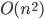.
-
If a problem is for some equation , that means our best algorithm can solve this problem with
complexity . There might exist an algorithm that does better, but we
haven’t discovered it yet.
-
In other words, it means is the complexity of the best known algorithm for .
-
For example, if we had an algorithm that had a worst-case
of , then that means the algorithm will, at worst, perform , but may perform better on average-case or
best-case.
-
Formally (weird maths language):
-
We say that is for another function if there exist reals:
-
 for all .
for all .
-
We say that g(n) is an asymptotic upper bound for
f(n)
The class P
-
The class P is the set of all decision problems that can be
solved by a deterministic Turing machine in polynomial
time.
-
Decision problem → For all inputs we receive a
“yes” or “no” answer
-
Deterministic Turing machine → A Turing machine that
cannot make any choices in terms of the next move
-
This is the model of a Turing machine that we have seen so
far
-
We will see a non-deterministic Turing machine later
-
Solved in polynomial time → The problem is
feasible
-
Some examples that are in P are
-
Searching an unordered list
-
Use sequential search, which is

-
Searching an ordered list
-
Use binary search, which is

-
Testing whether a list is sorted
-
Go through the list sequentially and compare each element
with the element before, which is
-
An example that is not in P is: Given a first-order
statement about non-negative integer variables (with only
symbols 0, 1, +, = and logical operators allowed), is it
true?
-
We are going to look at some equation with non-negative
integer variables, i.e. variables that can be assigned
natural numbers
-
On the left and right hand side of the equation we can
only
-
use the variables
-
use the “+” operation
-
use the numbers “0”, “1”
-
We will use quantifiers to form the first-order logic
statement, which is going to be either true or false
-
We can use the quantifiers “for all” and/or
“there exists”
-
We must define one quantifier for each variable
-
For all x there exists y such that the equation holds
-
There exists x then for all y there exists z such that the
equation holds
-
This problem is known to be decidable, but infeasible
-
This means that we can always say whether this equation
holds or not
-
However, this cannot be done in polynomial time with a
deterministic machine
Feasible and infeasible problems
-
A problem is said to be feasible if it has an algorithm
with time complexity 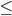 some polynomial f(n).
-
Examples: , , ,
-
These are problems with polynomial time complexity
-
Otherwise, a problem that can be solved in finite time but
has no polynomial time algorithm is said to be
infeasible
-
Examples: , ,
-
These are problems with complexity greater than polynomial
time (exponential and factorial time complexity)
Decision problems
-
A computational problem is called a decision problem if the
output for any problem instance is either “yes”
or “no”.
-
A problem instance is a specific input for a problem
-
For example, the numbers “1”, “4”,
“5”, “8” are problem instances for
an algorithm that determines whether a number is an even
number or not
-
This algorithm is a decision problem because given a number
this algorithm can say “yes this number is even”
or “no this number is not even”
-
We can classify the problem instances into
positive/”yes” instances and
negative/”no” instances
-
For example, “4” and “8” are
positive instances and “1” and “5”
are negative instances of the “is this number
even” problem.
-
The “yes” instances are forming a language.
Therefore, solving the decision problem is the same as
deciding this language
-
For example, the positive instances of the “is this
number even” problem form the language of all even
numbers.
- 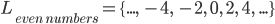
The PATH problem
-
Let PATH be the following decision problem: Given a
directed graph, does there exist a directed path connecting
two given nodes?
-
For example, given the following graph:
-
Does there exist a path from 1 to 6?
-
Does there exist a path from 3 to 4?
-
Does there exist a path from 5 to 1?
-
No, from 5 we can only reach 4 and 6
-
Does there exist a path from 1 to 3?
-
No, from 1 we can reach all nodes but 3
-
A polynomial time algorithm for PATH is the
following:
-
On input (G, s, t), where G is the graph, s is the start
node and t is the goal node
-
Place a mark on node s
-
Repeat the following until no additional nodes are
marked
-
For each edge from node a to b of G, if a is marked then
also mark b
-
If t is marked then accept, otherwise reject
-
This algorithm runs in polynomial time
-
The graph has n nodes and m edges
-
For each node n we have to mark and check at most m other
nodes which are directly connected (via an edge) to n
-
Therefore, this algorithm runs in time
The HAMPATH problem
-
Let HAMPATH be the following decision problem: Given a
directed graph, does there exist a directed path connecting
two given nodes that goes through each node exactly
once?
-
This is an extension of PATH: We do not only have to find a
path from one node to another node - the path also needs to
go through each node exactly once.
-
The best known algorithm for this problem is exponential,
however, we do not know if there exists a polynomial time
algorithm.
-
Given a candidate for a HAMPATH, we can verify it in
polynomial time.
Regular and context-free languages
-
Every regular language is in P
-
If a language is regular then there exists a DFA that
accepts the language
-
A Turing machine can simulate a DFA
-
It will have the input string and a symbol that marks the
end of the string (end marker) on the tape
-
It will always move right after consuming a symbol and
change state in the same way as the DFA would change
state
-
When it reaches the end marker and it is in a state that
corresponds to the accept state of the DFA it will accept,
otherwise it will reject
-
Therefore, the Turing machine will execute exactly n steps
(where n is the length of the input string) so it’s
time complexity is
-
Every context-free language is in P
-
For every context-free language there exists a
corresponding context-free grammar.
-
For every context-free grammar, there exists another
grammar which accepts the same language in Chomsky normal
form.
-
Grammars in Chomsky can be parsed using the CYK (Cocke-Younger-Kasami) algorithm (citation), which parses in cubic time, which is polynomial.
-
One could create a Turing machine which applies the CYK
algorithm to a given context-free grammar, and that Turing
machine would accept said context-free language in cubic
time.
The class NP
-
The class NP is the set of all decision problems that can
be solved by a non-deterministic Turing machine in
polynomial time
-
NP stands for non-deterministic polynomial
-
Anything in P is also in NP. If a problem can be solved in
polynomial time by a deterministic machine, then also by a
non-deterministic one.
-
Let’s look at some NP problems which are believed not
to be in P
Non-deterministic Turing machine
-
A non-deterministic TM is of the same form as a
deterministic TM:
-
-
However, the transition function is defined
differently
-
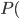
 is the transition function
is the transition function
-
Note that the output of the function is now a power set of
configurations
-
This means that given a configuration, there are many
possible other configurations in which the TM can be after making the transition
-
Therefore, the Turing machine becomes non-deterministic.
-
We can think of the non-deterministic TM as a TM that makes all possible transitions from a given
configuration in parallel
-
Therefore, the computation of a non-deterministic TM is a tree, whose branches are all traversed in
parallel
-
In contrast, the computation of a deterministic TM is a linear path, as there is exactly one
configuration after making a transition.
-
Non-deterministic TMs have the same expressibility as
deterministic TMs. We can simulate a non-deterministic TM
with a multi-tape deterministic TM.
-
The deterministic TM has four tapes:
-
One to remember the input.
-
One to simulate the current state of the branch.
-
One to remember the branch being simulated on.
-
One to remember the branches simulated.
-
The deterministic TM accepts an input when one of the
branches accepts, and rejects otherwise.
-
A non-deterministic TM is a decider when all its branches halts on all inputs, similar to
a total TM.
-
Since we now have a tree of configurations, we need to
re-think the condition when the non-deterministic TM accepts/rejects.
-
Reminder: A deterministic TM
-
accepts/rejects as soon as it reaches a accept/reject
configuration
-
loops if it never reaches such a configuration
-
accepts if some branch of the computation leads to the accept
state
-
rejects if all branches of the computation lead to the reject
state
-
loops if none of those two conditions are ever met
-
For example, the tree can be infinite and without any
accept state
-
If all branches halt on all inputs, i.e. if the computation
tree is finite, the non-deterministic TM is called a
decider
-
This is similar to a deterministic total TM, which always halts on any input
-
The decider accepts an input if there exists a sequence of
choices, where at least one ends in the accepting
state.
-
Otherwise all choices will end in the reject state and the
decider will reject the input
-
Non-deterministic TMs are not more powerful than deterministic TMs as we are going to see shortly
-
For any non-deterministic TM there exists a deterministic TM accepting the same language
-
A non-deterministic TM N can be simulated by a 3-tape deterministic TM D
-
D will try all branches of N’s computation using
breadth first search
-
If we use depth first search our simulation can get stuck
in an infinite loop in case of an infinite tree
-
There might exist an accept state on another branch which
we are unable to reach because of the infinite loop
-
In order to avoid this we have to use breadth first
search
-
The 3 tapes are used as follows
-
One tape stores the input
-
One tape used to simulate a branch up to a given
depth
-
One tape used to remember the branch being simulated
-
If D ever finds the accept state in the tree it will
accept. Otherwise D will loop.
-
For any non-deterministic TM that halts on all branches (= decider) there exists a
total TM deciding the same language
-
We can modify the proof from above such that if N halts on
all branches then D halts
-
Therefore, we will introduce a fourth tape where we
remember the branches that halt. We are not going to explore
these branches again
-
If there is no branch left to explore, reject
-
Therefore, we can conclude that any non-deterministic TM
has an equivalent deterministic TM
Time complexity of Turing machines
-
Let’s think about the time complexity of Turing
machines
-
First, we will define the following:
-
The size of a problem instance = the number of symbols on
the input tape
-
The algorithm cost (measure of time taken) = number of
steps the Turing machine takes
-
The time complexity of a decider is a function f(n), where
f(n) is the maximum number of steps the machine takes on any
branch of its computation, on any input of length n.
-
In other words, to determine the time complexity of a
decider, we are going to take a look at the computation tree
for some input of length n
-
The time complexity is equal to the depth of this tree
-
Every time multi-tape deterministic TM has an equivalent time single-tape deterministic TM
-
If a multi-tape TM runs in time, it can only use tape cells on each tape
-
We can construct a single-tape TM that simulates the
multi-tape TM
-
Before simulating a single step of the multi-tape TM we
need to find the position of the tape heads. These positions
will be marked using special symbols on the tape.
-
Therefore, we are going to scan the tape from left to
right, which takes an extra steps. The tape heads might be anywhere on the tape
but cannot be beyond the tape cells, which is why we use big O notation
here.
-
All in all, we have steps to simulate, and for each step we can find the
tape heads in time, so all in all we require time for the whole simulation.
-
The following is an example of a single-tape TM simulating
a 3-tape TM. The position of the heads is marked with a
“^” symbol:
|
⊢
|
⊢
|
a
|
b̂
|
c
|
d
|
e
|
|
⊢
|
h
|
i
|
j
|
k̂
|
l
|
|
⊢
|
v̂
|
w
|
x
|
y
|
z
|
-
Every time non-deterministic Turing machine has an
equivalent time deterministic Turing machine
-
Each branch of a time non-deterministic TM N has length of at most .
-
Remember: the time complexity of a non-deterministic TM is
defined as the depth of the computation tree
-
Therefore, the length of the longest branch is equal to the
time complexity
-
Each node in the computation tree of N can have up to children.
-
This is also known as the branching factor of the
tree.
-
Therefore, there are at most leaves, and nodes in the computation tree of the non-deterministic TM
N
-
A tree with branching factor and depth cannot have more than nodes
-
A tree with branching factor and depth cannot have more than leaves. Furthermore, it also cannot have more than leaves, which is a less restrictive statement.
-
We can construct a multi tape deterministic TM to simulate
N. This will take time.
-
We need to simulate the path from the root to each of the
leaves. Since we have at most leaves we need to simulate at most paths.
-
Each of the paths we are going to simulate is no longer
than
-
Therefore the simulation will take no longer than time
-
is (see tutorial 8 question 2)
-
The big O notation is an upper bound and hides a constant , therefore we have to show that there exists some and such that for all
|
Proof from the tutorial that I don’t
understand
|
My proof that I fully understand
|
|

For all , therefore and
|
For all , therefore and
|
The SAT problem
-
SAT: Boolean satisfiability
-
Given a boolean expression, does there exist an assignment
of true and false (or 0s and 1s) to all variables such that
the formula is satisfied?
-
Example:
-
Does there exist an assignment for the variables such that the formula is satisfied?
-
SAT is in NP: We can non-deterministically generate all
possible assignments to the variables and then check if the
formula is satisfied.
-
For each variable, we have two options: It can be either
true or false
-
If we want to solve this problem in a deterministic way, we
have to try out either true or false for each of the
variables
-
Therefore, it will take time where is the number of variables
-
However, a non-deterministic machine has the power to
always guess the right assignment for each of the
variable
-
For instance, if we have three variables there are 8 different assignments for these
variables
-
The non-deterministic machine will always pick the right
assignment for each of the variables before moving on to the
next variable
-
We can visualise this in a computation tree. The
non-deterministic machine will instantly pick the right path
from the root to the leave which makes the formula true (if
such an assignment exists)
-
Therefore, it can solve the problem in linear time (linear
in the number of variables)
-
-
We don’t know if SAT is in P because we currently do
not have any polynomial time algorithm for it. However, no
one has been able to prove that there isn’t one.
The HAMPATH problem
-
HAMPATH: Given a directed graph, does there exist a
directed path connecting two given nodes that goes through
each node exactly once?
-
We can non-deterministically generate all sequences of
nodes of length equal to the size of the graph, and then
check the following:
-
No repetitions are found in the sequence
-
The start and end of the sequence coincide with the
required nodes
-
The sequences defines a directed path through the
graph
-
We don’t know if HAMPATH is in P
The TSP(D) problem
-
TSP(D) refers to the Travelling Salesperson Problem.
-
For this problem, you have a graph with weighted edges and
an input D.
-
Is there a route leading all around the graph and back to
the start with a total distance at most D?
-
This problem is in NP because the TM would have to
‘guess’ the order of cities to check in, then
add up the distances to see if it’s at most D.
-
We don’t know if TSP(D) is in P.
The 3COL problem
-
3COL: 3-colourability
-
Given a graph G, is it possible to colour all the vertices with one of three available
colours such that no two adjacent vertices are the same
colour?
-
Here is an example of a solution:
-
This problem is in NP because we can non-deterministically
guess the colour of each vertex; our computation splits into
3 branches of “is this node red?”, “is
this node blue?”, or “is this node
green?”.
-
We don’t know if 3COL is in P.
NP = P?
-
This is one of the biggest problems in computer science. Is
NP equal for P? What if every problem in NP has a P
algorithm, but we just haven’t discovered them all
yet?
- I don’t know.
-
But if P does equal NP, that means:
-
P = NP = NP-complete
-
To prove that P = NP-complete, we need to show that all
problems in NP can reduce to all problems in P in polynomial
time.
-
So we’ll have some arbitrary problem X in P and some
arbitrary problem Y in NP.
-
We will then reduce Y to X. When we do that, we’ll
have proved that all NP problems reduce to all P problems
and that P = NP-complete, hence P = NP = NP-complete.
-
If Y is in NP, that means it’s in P also (because P =
NP).
-
This proof only works if the language of X is non-trivial,
meaning it’s not the empty set or sigma star!
-
If X is not trivial, that means there exists an input such that X will accept it, and an input such that X will reject it.
-
Our reduction formula will remember this, and simulate an input y on Y. If Y accepts,
then the formula returns . If Y rejects, then the formula returns .
-
This is computable in polynomial time and maps yes/no
instances of Y to yes/no instances of X, hence proving that
if P = NP, then P = NP = NP-complete.
-
P ⊂ NP-hard
-
Following from the P = NP = NP-complete rule we proved
earlier...
-
Some NP-hard problems are NP-complete.
-
If P = NP-complete, that means some NP-hard problems are
also in P.
-
Therefore, P is a strict subset of NP-hard.
-
Here is what the problem sets will look like if P != NP and
P = NP (just remember that trivial problems are in P and NP,
just not NP-complete!):
Presburger arithmetic
-
Here’s a problem that’s so hard that it’s
not even in NP. However, it is decidable (possible to
solve).
-
It goes like this:
-
You have a set of variables, each with either a ‘for
all’ for ‘there exists’.
-
There is also a formula that links up all the variables
together.
-
Is the formula true?
-
If that explanation didn’t make much sense, the
problems look like this:
-
The question is: do these formulae hold?
-
This is so hard that this is at least doubly exponential,
which is !
NP-Completeness
Polynomial time reduction
-
Remember reduction with Turing machines?
-
We can do the same here; we can reduce a problem to another
problem.
-
If we can reduce problem A to problem B, then any
polynomial algorithm for B also applies for A, right?
-
Almost! The reduction needs to be in polynomial time as
well. This is called a polynomial time reduction.
-
So to solve problem A, we need to reduce it to B in
polynomial time, then solve B in polynomial time. Polynomial
+ polynomial = polynomial, so solving A would also be in
polynomial time.
-
If you’re a visual learner, maybe this diagram will
help (it goes from left to right):
-
Polynomial time reduction is written like this:
-
More formally, it’s defined like this:
-
A function is polynomial time computable if there exists a
polynomial time deterministic Turing machine that halts on
each input with just on its tape.
-
From this, we can conclude that if A reduces to B in
polynomial time, and B is in P, then A is in P.
-
Additionally, if A reduces to B in polynomial time, and A
is not in P, then B is not in P.
3COL to SAT
-
We can reduce 3COL (3-colourability) to SAT (boolean
satisfiability).
-
We can do this by:
-
for each node ‘x’ in 3COL...
-
... create 3 variables in SAT, rx (is ‘x’
red?), gx (is ‘x’ green?), and bx (is
‘x’ blue?).
-
After we’ve created our variables, we need to define
three expressions:
-
For each vertex ‘x’, the expression:
(rx OR gx OR bx)
must be true (each vertex must be assigned a colour)
-
For each vertex ‘x’, the expression:
( !(rx AND gx) AND !(rx AND bx) AND !(bx AND gx) )
must be true (each vertex may only have ONE colour)
-
For each edge ‘x y’, the expression:
!(rx AND ry) AND !(gx AND gy) AND !(bx AND by)
must be true (no two adjacent vertices should have the same
colour)
-
All these expressions are ‘AND’ed together, and
that forms the final expression for SAT.
-
So our 3COL problem is just two nodes with one edge joining
them.
-
The first block in the SAT expression makes sure that each
node has a colour.
-
The second block in the SAT expression makes sure each node
has only ONE colour.
-
The third block in the SAT expression makes sure that nodes
1 and 2 don’t share the same colour.
-
Great, but is it in polynomial time?
-
The number of characters in the output SAT problem
is:
-
Where and . I don’t know about you, but that looks like a
polynomial to me.
-
By applying this method, we can convert any 3COL problem to
SAT.
-
That means if we solve SAT in polynomial time, we can solve
3COL in polynomial time.
-
Conversely, if we find that 3COL is not in P, then SAT
cannot be in P.
NP-hard
-
What’s NP-hard?
-
NP-hard is a set of problems where any NP problem can
reduce to any NP-hard problem in polynomial time.
-
This shows that NP-hard problems are, in a sense, hard,
because every NP problem can reduce to it.
The Cook-Levin theorem
-
The Cook-Levin theorem states that any NP problem can
reduce to SAT in polynomial time.
-
That means that SAT is an NP-hard problem, because every NP
problem can reduce to it.
-
This also means that if we can solve SAT in polynomial
time, then every NP problem will be solvable in polynomial
time, and NP will be equal to P.
-
To convert an NP problem X into SAT, you need to
‘encode’ the parameters of X into boolean
variables and construct an expression for SAT.
-
There’s a proof for it, but it’s not
examinable. Basically, it’s about converting a Turing
machine into a boolean expression.
What is NP-completeness
-
An NP-complete problem is a problem in NP and
NP-hard.
-
SAT is an example of an NP-complete problem, because it can
be solved by a non-deterministic Turing machine and every
other NP problem can be reduced to it in polynomial
time.
-
To find another NP-complete problem, you just need to have
a problem X that is in NP, then find a reduction function
from SAT to X.
-
Just remember: if you solve an NP-complete problem in
polynomial time, you’ve solved all NP problems in
polynomial time, too, proving P = NP.
Space complexity
Space complexity
-
First of all, what is space complexity?
-
The space complexity of a decider is the function where is the maximum number of tape cells the machine scans
on any branch of its computation, on any input of length
n.
-
Basically, what’s the maximum number of tape cells we need to solve this
problem?
-
Here’s a theorem for you:
-
Assume . If a decider runs in space, then it runs in time.
- Why?
-
Well, think of all the different possible combinations the
Turing tape could be:
-
There’s lots of possibilities the tape could
be!
-
What are all the possible combinations of the tape?
-
Well, first of all, we need to know how long the tape is.
We already know that! It’s the space complexity of the
algorithm, which is f(n). That’s how many tape cells
we need to solve the problem.
-
Let’s just say that our decider has to run through
every possible tape configuration to solve the
problem.
-
We need a bit of combinatorics from Foundations here; what
are all the possible combinations of this tape?
-
For each position on the tape, there are ‘m’
possibilities, where ‘m’ is the number of
symbols available to put on the tape.
-
So, we multiply for each tape cell, m * m * m * m ... f(n)
times. This yields us:
-
We still have a ways to go!
-
We have our base ‘m’. However, with a little mathsy magic, we can generalise this
further and make our base ‘2’:
-
What’s the opposite of exponential? That’s
right; it’s logarithms!
-
We can simply take the logarithm of ‘m’ and
convert the base to a ‘2’!
-
Still remember your GCSE maths? When you have a power to
the power, you multiply the powers.
-
Wait a minute... is just a constant. It could be anything, depending
on what ‘m’ is! Look familiar? That’s the
constant ‘c’ found in Big-O notation! Therefore,
we can introduce Big-O notation to generalise that
constant.
-
As you can see, we have resulted in , thereby proving the link between time and space
complexity.
-
What does this mean?
-
It means the time complexity is 2 to the power of space complexity.
-
Remember our assumption: the decider checks all possible
combinations of tape. Therefore, this is simply an
“upper bound”. In other words, a decider of
space complexity linear or above will have at worst exponential time complexity.
PSPACE
-
PSPACE is the set of all decision problems that can be
solved by a deterministic Turing machine in polynomial
space.
NPSPACE
-
NPSPACE is the set of all decision problems that can be
solved by a non-deterministic Turing machine in polynomial
space.
-
Anything in PSPACE is in NPSPACE, and anything in NPSPACE
is in PSPACE (see Savitch’s Theorem, which is literally just
below)
Savitch’s Theorem
-
Here’s another theorem, called Savitch’s
theorem:
-
For , every space non-deterministic Turing machine has an
equivalent space deterministic Turing machine.
-
This means that PSPACE = NPSPACE.
-
There’s a proof for this, but it’s not
examinable.
EXPTIME
-
The class EXPTIME is the set of all decision problems that
can be solved by a deterministic Turing machine in time for some .
Relationships between complexity classes
-
P ⊆ PSPACE: a machine that runs in polynomial time can
only use polynomial space
-
NP ⊆ NPSPACE: same reason
-
Hence, using Savitch’s theorem, NP ⊆
PSPACE
-
PSPACE ⊆ EXPTIME:
-
If a decider runs in f(n) space, then it runs in time.
-
We don’t know which inclusion is strict.
-
All we know is P
 EXPTIME.
EXPTIME.
-
Note: One can also define EXPSPACE. We know that
-
EXPTIME ⊆ EXPSPACE
-
PSPACE EXPSPACE
PSPACE-hard
-
A problem X is PSPACE-hard if every problem A in PSPACE is
polynomial-time reducible to X.
-
Examples of PSPACE-hard problems are Chess and Go.
-
Why not space-reducible?
-
We defined it like that because we want reductions to be
easy compared to problems in NP!
-
If we used polynomial space reduction from A to B, then
found an easy solution for B, it could potentially be
factorial time complexity for A!
-
However, because we use time-reducible, it has to be both
polynomial time and polynomial space (because P ⊆ PSPACE).
PSPACE-completeness
-
PSPACE-complete simply means that a problem is both PSPACE
and PSPACE-hard.
-
An example of a PSPACE-complete problem is TQBF.
-
Let TQBF be the problem of deciding whether a fully
quantified boolean formula is true.
-
Examples of fully quantified boolean formulas:
-
∀x∀y(x ∨ y)
-
∀x∃y((x ∨ y) ∧ (¬x ∨
¬y))
-
Are there formulas true for all cases? Yes or no? That is
the TQBF problem.
TL;DR
-
Can’t be bothered to read all these notes?
-
Need a bite-sized form of these notes?
-
The TL;DR section has your back!
Automata theory: Regular languages
-
Alphabet: a set of symbols
-
Language: any string that can be made with an alphabet
-
DFAs start at the initial state, then goes through transitions (each character in
the string) until it reaches an accept state.
-
DFAs cannot guess; they must discretely be in only one
state at a time, and each state must have all possible types
of transitions from it
-
DFAs either accept a string or reject a string
-
DFAs are deterministic, NFAs are non-deterministic
-
NFAs and DFAs have the same power
-
The set of all strings that a DFA / NFA can accept is
called it’s language
-
εNFAs have epsilon-moves, which are free moves that
do not cost any symbols in the string
-
A language accepted by some DFA or NFA is called
‘regular’
-
Regular expressions have the same power as DFAs and
NFAs
-
“a*” means 0 or more repetitions of a
-
“a + b” means a or b
-
“ab” means a followed by b
-
You can always convert an NFA/DFA to regex or vice
versa
-
You can prove a language is regular by constructing a DFA /
NFA / regex
-
You can prove a language is not regular by using the
pumping lemma
Automata theory: Context free languages
-
A language is context free if it can be accepted by a PDA
or CFG
-
Pushdown automata (PDA) are like DFAs and NFAs, but you get
a stack.
-
Each transition, an element is popped or pushed onto the
stack
-
PDAs accept by final state or by empty stack
-
Context free grammars are just as powerful as PDAs

-
There are two forms of CFGs:
-
Chomsky normal form
-
-
Greibach normal form
-

-
You can always convert a CFG to either Chomsky or
Greibach
-
You can always convert a CFG to PDA or vice versa
-
You can prove a language isn’t context-free using the
pumping lemma
Computability theory
-
A Turing machine is like a PDA, but instead of a stack you
get tape. You can move left or right on the tape, write to
the tape and read from the tape.
-
They are the closest mathematical abstraction of an actual
computer.
-
A language is recursively enumerable (r.e) if it can be
accepted by a Turing machine.
-
A language is recursive if a Turing machine can accept and
reject strings from that language without looping.
-
Multi-tape TMs are just as powerful as single-tape
TMs
-
A Universal Turing machine can simulate a Turing machine
with a given input
-
The Halting problem: Is there a Turing machine that can
accept if an input halts on a TM and reject if an input
loops on a TM?
-
It’s impossible. There is a diagonalisation proof for
this.
-
The Halting problem is ‘undecidable’.
-
The membership problem is also ‘undecidable’,
because if we had a TM to solve the membership problem, we
could use that to solve the Halting problem.
-
Reduction: a computable function that maps inputs of one problem to another.
-
Rice’s theorem states that any property about a
Turing machine’s language is undecidable:
-
You can’t tell if a TM accepts the empty string
-
You can’t tell if a TM accepts any string
-
You can’t tell if a TM accepts all the strings
- etc.
Complexity theory
-
Big-O represents the best algorithm we currently have; we
could do better but this is the best we have
-
Big-Θ represents that an algorithm can scale no
better than this
-
Time complexity is the number of steps it takes for a
Turing machine to solve a problem.
-
The class P is the set of all decision problems that can be solved by a deterministic Turing
machine in polynomial time
-
The class NP is the set of all decision problems that can be solved by a non-deterministic Turing
machine in polynomial time.
-
The class NP-hard is the set of all problems such that all
the NP problems can reduce into any NP-hard problem in
polynomial time.
-
The class NP-complete is the set of all problems such that
they are in both NP and NP-hard.
-
If you find a (deterministic) polynomial algorithm for an
NP-complete problem, then P = NP.
-
If P = NP, then:
-
P = NP = NP-complete
-
P ⊂ NP-hard
-
Space complexity is the minimum number of tape cells
required for a Turing machine to solve a problem.
-
PSPACE is the set of all decision problems that can be
solved by a deterministic Turing machine in polynomial
space.
-
NPSPACE is the set of all decision problems that can be
solved by a non-deterministic Turing machine in polynomial
space.
-
Savitch’s Theorem states that for , every space non-deterministic Turing machine has an
equivalent space deterministic Turing machine.
-
Therefore, PSPACE = NPSPACE.
-
EXPTIME is the set of all decision problems that can be
solved by a deterministic Turing machine in time for some .
-
PSPACE = NPSPACE
-
NP ⊆ PSPACE
-
PSPACE ⊆ EXPTIME
-
P ⊂ EXPTIME
-
PSPACE-hard is the set of all problems such that all the
PSPACE problems can reduce into any PSPACE-hard problems in
polynomial time.
-
PSPACE-complete is the set of all problems that are in
PSPACE and PSPACE-hard.